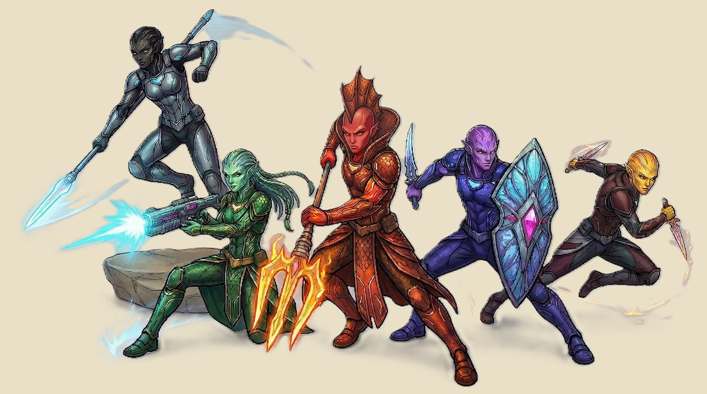
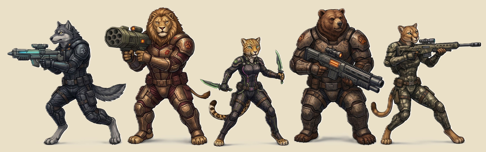
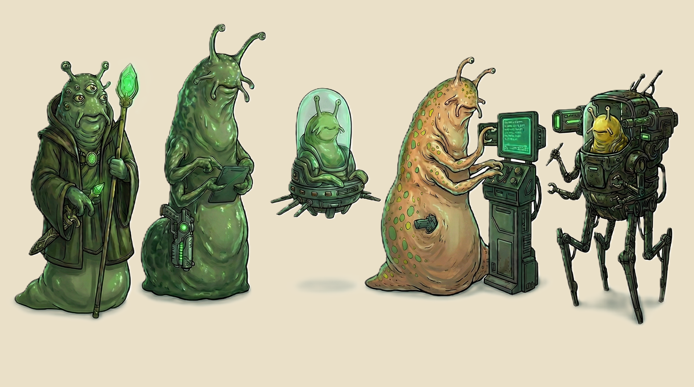
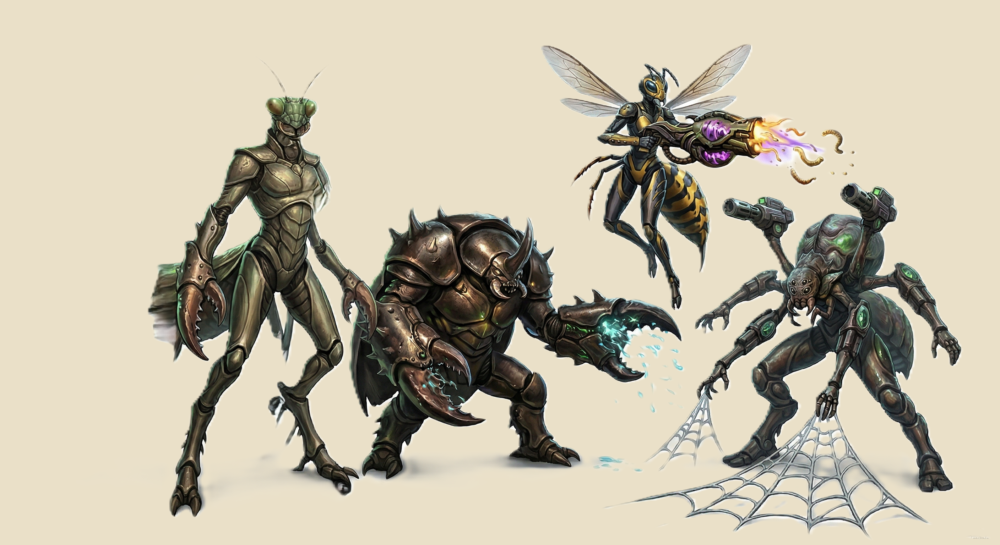

A galaxy of fragile peace, explosive growth, and looming vengeance.
Introduction
Prologue
"We came to flee a war, little did we know, war was waiting for us across the stars. "
— From the Archives of Wayfarer's Rest
Four hundred years of war ended not with a victory, but with a plague — and a silence neither side knew how to trust. When a mysterious contagion swept through the Tall-Daimaken homeworlds, it reached even the imperial bloodline, threatening the life of Malikorn, sole heir to the Daimaken throne. The cure lay not in their own territory, but deep within Federation space — a rare medicinal plant that only grew in the heart of their enemy's domain. Faced with the death of his son or the humbling of his empire, the Daimaken king chose his son. An uneasy respite was called, and for the first time in four centuries, the guns went quiet.
Into that silence stepped the Maldons — a pacifist trading race long trusted by neither side but despised by neither either. They carried a single proposal: the Federation would provide the plant, and in exchange, the scattered peoples of the Sliver — families split across the front lines for generations — would be permitted to cross back and be reunited with their kin. It was a small mercy in a vast war, but it was enough. Talks began. The Treaty of the Expanse was signed. As its first act, both powers agreed to power down the Hyperion Bearer — the vast ring of warp-disruptor satellites that had blockaded hyperspace travel between their territories for decades. With the Bearer dark and silent, the Maldons activated their secret hyperspace routes, stitching the two halves of the galaxy back together with lanes of trade where warships had once patrolled.
Not everyone chose peace. A formidable third of the Empire's ruling houses — proud, unbroken, and unwilling to submit — refused the terms and vanished into the Unknown Regions, reforming as the Daimaken Militarium. They did not surrender. They regrouped.
Seven years have passed. The Maldon trade routes are now highways of commerce linking former enemies. New worlds long overlooked now clamor to join the Federation and share in the prosperity. But prosperity casts long shadows. From the darkest folds of the Void, a nameless fleet has emerged — raiders with no homeworld, no flag, and no demands. They do not negotiate. They do not ransom. The Void Pirates strike, vanish, and strike again, and no one yet knows who commands them or what they truly want.
The galaxy stands at a crossroads. The Federation struggles to hold an order it was never built for peace to maintain. The Militarium sharpens its blades in the dark. New alliances flicker into being like stars being born — and like stars, some will collapse before they ever shine. Whether this fragile age becomes a golden era or the prelude to something far worse depends on the choices made now, in the margins of history, by those bold or desperate enough to act.
This is the age of fragile peace, desperate ambition, and looming vengeance. This is the Age of The Trade Expanse.
Chapter I
The Sceptre Galaxy
The turbulent state of The Sceptre Galaxy is defined by three major powers, each vying for control, vengeance, or survival in the fragile peace of the Trade Expanse, as well as newly discovered worlds emerging from centuries of isolation.
Major Faction
The Galactic Federation
The Galactic Federation was established nearly 900 years ago, born from a historic revolution. Humans, Foletions, and a faction of dissenting Haptapians united to overthrow the iron grip of the Haptapion Overlords — the autocratic ruling class that had long dominated The Sceptre Galaxy. From that hard-won liberation, a new order was forged: a coalition of worlds committed to stability, trade, and shared governance So I got sick and tired of Pretty. Its most defining recent action was the joint deactivation of the Hyperion Bearer five years ago — the massive ring of warp-disruptor satellites that had split the galaxy in two throughout the war. This tenuous peace was brokered by the Maldons, a pacifist trading species whose remarkable diplomacy prevented total annihilation. Now, the Federation oversees the Age of the Trade Expanse, a time of unprecedented prosperity, exploration, and danger.
Federation Worlds
Aurelion Prime — The Homeworld
Earth-like, politically powerful, and culturally diverse. The heart of the Federation.
VerdantHaven — Agricultural World
A planet of lush forests and endless plains, responsible for feeding half the Federation's population.
Lumen-Arc — Research World
Crystalline deserts conceal psionic labs and centers for advanced wormhole physics research.
Wayfarer's Rest — Trade Nexus
A massive orbital station serving as the Gateway to the Void and home of the powerful Guild of Navigators.
Dustreach — Desert Mining World
A harsh, mineral-rich territory plagued by smugglers and unauthorized operations.
Nightfall-Station — Border Listening Post
The first of seven regulated crossing points through the dormant Hyperion Bearer satellite line.
Major Faction
The Tall-Daimaken Empire
Once a proud, expansionist civilization that commanded a massive swath of the galaxy, the Tall-Daimaken Empire shattered when a biological plague was unleashed among its worlds — bringing them to the negotiation table. A formidable third of the original ruling houses refused peace and retreated into the uncharted Unknown Regions, unifying into the Daimaken Militarium and vowing vengeance against the Federation.
Daimaken Worlds
Vor'Mak Prime — Capital
The true seat of power in the new Daimaken Alliance. Oxygen-rich atmospheres support thriving civilian hubs amidst ancient war-drones.
Drak'Thaar — Throneworld
A desert beauty with many springs creating oases through vast oceans of sand. The ceremonial center of the Daimaken way — a holy planet.
Kryn'Voss — Military Bastion
Frozen and volcanic. Vast subterranean thermal cities house the elite frost-legions. Only a thin band at the equator and along its fault lines is truly inhabitable.
Shadowmire — Psionic Swamp World
A vibrant, bioluminescent ecosystem where thick fog sustains life, allowing Daimaken seers to live in harmony with the wetlands.
Ash'tera — Mining World
A black desert wasteland, rumored to be haunted by autonomous war-machines of a bygone era.
Nullhaven — Dead World
An irradiated, cracked world forbidden by Daimaken law — a silent testament to a forgotten war.
Rogue Faction
The Space Pirates & The Obsidian Veil
The so-called Space Pirates are not a single species, but a chaotic syndicate composed of deserters, hardened mercenaries, rogue bio-engineers, and ruthless raiders. They operate with no allegiance to either major power and no mercy for their victims, attacking trade routes with devastating efficiency.
Assets & Weapons
Superior scavenged technology from abandoned war-sites
Parasitic biological weapons designed for rapid infection and control
Void-warped monstrosities — mutated creatures used as shock troops
The Obsidian Veil — The Black World
The heart and stronghold of the Pirate Syndicate is the Obsidian Veil, a rogue planet drifting through the Void. It has no star, no orbit, and its origin remains unknown. Its interior is a network of massive caverns where the pirates hold their fortress. It is the nexus of the Syndicate's illegal biological labs and a source of intense psionic distortions. The Black World is feared by every faction and is the subject of endless fearful whispers among smugglers throughout the Trade Expanse.
Emerging Worlds
The New Worlds
Discovered during the rapid growth of the Trade Expanse, these solar systems exist within isolated pockets of the Void that were overlooked during the 400-year war. For centuries, the only contact these systems had with the wider galaxy was through the wreckage of crashed battleships and the stories of marooned soldiers. Now emerging from isolation, they seek integration into the Galactic Federation.
Aethelgard — The Paradise World
A breathtaking planet of floating islands and bioluminescent oceans. Populated by survivors of a Federation medical frigate, its inhabitants have built a society centered on pacifism and ecological harmony. Considered the jewel of the Void clusters.
Iron-Hold — The Fortress Remains
A rocky, low-gravity world dominated by the massive hull of an ancient Dreadnought that crashed into its northern pole. Descendants of the original crew turned the ship into a vertical city, specialized in scavenging and heavy metal refinement.
Vanguard's End — The Outpost
A harsh, storm-wracked planet that served as a forgotten graveyard for both Federation and Empire vessels. Now a burgeoning trade hub where the children of marooned enemies live side-by-side, eager to trade ancient tech for Federation citizenship.
Chapter II — Part One
Races of the Expanse
Seven major races populate the galaxy, each with a distinct culture, biological advantage, and role in the Age of the Trade Expanse. When creating a character, choose a race to gain its Racial Bonus and one optional ability point.
Humans
The bedrock species of the Galactic Federation. Known for adaptability, aggressive expansion, and fractured politics. Originally refugees from a war-ravaged solar system, humanity fled Earth approximately 1,300 years ago aboard a great colony fleet bound for Alpha Centauri. A catastrophic navigation computer error sent them spiraling wildly off course, depositing them deep within an uncharted region of the universe — the galaxy now known as The Sceptre. They settled Aurelion Prime as their new homeworld, and four centuries later stood as founding members of the Galactic Federation. They now hold key positions in the military, Guild of Navigators, and central government — their collective ambition to explore and civilize the cosmos both their defining trait and their greatest weakness.
+2 Aura
+1 to any ability
Haptapian
Graceful, fish-like sentients who populate oceanic worlds and orbital aquatic stations. Masters of bio-engineering and deep-space current navigation. Their natural aversion to the Void makes them cautious explorers, but their superior hydrodynamic knowledge makes them invaluable aboard Federation transport vessels.

+2 Genius
+1 to any ability
Foletions
Stout, wolf-like humanoids native to colder, forested regions. Fierce loyalty and a strong pack-based culture centered on honor and physical prowess. Often found serving as elite heavy-infantry mercenaries and security personnel for wealthy trade houses.

+2 Strength
+1 to any ability
Sluginish
Highly advanced, slug-like race evolved in high-gravity, radiation-rich environments. Compensate for slow physicality with unmatched technological foresight in energy conversion, shielding, and miniaturization. Operate massive, near-indestructible factory-ships and effectively control production of the galaxy's most advanced warp cores.

+2 Vigor
+1 to any ability
Muldion
The peaceful trading race that brokered the end of the Tall-Daimaken War. Their strength lies not in military might but in a meticulously constructed economic network: the largest banks, credit exchanges, and interstellar trade consortiums in the galaxy. Diplomatic to a fault, they refuse to take sides in any conflict.
+2 Aura
+1 to any ability
Verscar
A secretive, insectoid race of singular focus, specializing in cloning, rapid-evolution, and forbidden bio-technology. Their society is a vast hive-mind that sacrifices individual identity for collective perfection. Viewed with deep suspicion by all — their technology is believed to be the source of the biological monstrosities deployed by the Space Pirates.

+2 Cunning
+1 to any ability
Ssarax
Formidable, dinosaur-like beings of immense physical power, specializing in heavy orbital bombardment, kinetic weaponry, and regenerative bio-armor. Their society is a strict martial meritocracy where the most battle-scarred individuals lead nomadic war-fleets. Viewed as a necessary evil by the Federation — hired as shock troops, but feared as apex predators.
+2 Strength
+1 to any ability
Chapter II — Part Two
The Caste System
Every character in The Cosmic Protocol belongs to one of four castes. A caste defines early training, social expectations, and the mechanical advantages a character brings to the galaxy. Choose your caste before selecting a profession.
Royalty
Born into political dynasties, planetary houses, or ancient bloodlines. Upbringing steeped in diplomacy, leadership, and public expectation. Their successes are celebrated — and their failures magnified.
Royal Privilege (+2) — Once per rest, add +2 to any ability check after rolling but before the result is revealed. If the check still fails, the character suffers a GM-determined setback and loses Royal Privilege until their next rest.
Noblesse Oblige (+2) — Once per rest, a Royalty character may bestow +2 to any one roll made by a non-Royal party member, or a Royal of lower status, declared before the roll is made. The same party member may not receive this blessing two sessions in a row. If the blessed roll fails, the Royalty character loses access to Noblesse Oblige until their next rest.
Royalty also gain +1 Aura. If an Aura check fails, something negative occurs at the GM's discretion.
Recommended Abilities: Aura, Cunning
Upper Echelon
Officers, scientists, doctors, engineers, navigators, and other highly trained specialists. Authority earned through education, discipline, and technical mastery.
Professional Aptitude (+2) — Gain +2 to all actions directly tied to their profession's specialty. This bonus does not apply to an ability score — it applies to the category of actions their profession governs.
Recommended Abilities: Genius, Aura
Skilled
The working class of the galaxy: technicians, coders, traders, soldiers, pilots, and security personnel. Practical, adaptable, and essential to the functioning of every world and starship.
Broad Competency (+1) — Gain +1 to all actions tied to any of their profession's skills. This bonus applies to every skill their profession uses, not just one. Skilled characters also gain +1 to any one ability of their choice.
Recommended Abilities: Agility, Strength
Unmark
Those without lineage, privilege, or institutional support. Rogues, wanderers, gang members, scavengers, and drifters. Underestimated, yet resourceful and resilient — capable of thriving where others fail.
Adaptive Deception (+2) — Gain +2 to all actions involving deception: impersonation, forgery, false credentials, bluffing, disguise, and pretending to perform a profession they do not have. May attempt to imitate any other profession's actions using deception.
The Discovered Roll — If an Unmark character fails two deception attempts during the same short rest, they must immediately make a Discovered Roll. On failure, they are exposed and subject to the laws of their current civilization. In outlaw territory, they are immune to legal penalties.
Recommended Abilities: Cunning, Vigor
Royalty Professions
All Royalty characters gain their caste bonuses in addition to their profession bonus. Royalty professions represent hereditary or honor-based titles that determine political influence, social expectations, and battlefield priority.
Duke / Duchess
Highest noble rank below the ruling family. Commands major political influence over vast territories.
+2 to High Diplomacy Actions
Level Abilities
Lvl 1Voice of Authority — Once per session, issue a command that forces one NPC to hesitate for 1 round before acting against you.
Lvl 2Noble Network — May call in a political favour once per session: gain access to restricted information, safe passage, or a neutral NPC ally for the encounter.
Lvl 3Territorial Claim — Designate one location per session as under your protection. Allies within it gain +1 to all saves.
Lvl 4Imperial Decree — Once per session, nullify one hostile social action (bribery, intimidation, arrest) directed at the party. No roll required.
Lvl 5Grand Alliance — Permanently secure one faction as a minor ally. They provide intel or resources once between each major rest.
Lvl 6Sovereign Will — Once per session, your word overrides any non-royal NPC directive. On a failed Aura check the effect still holds but a political consequence follows.
Lvl 7Grand Council Seat — Gain a permanent seat on one governing council. Once per session, veto one political decision before it affects the party.
Lvl 8Imperial Patronage — Formally sponsor one party member per session. While under your patronage they gain +1 to all rolls.
Lvl 9Sovereign Mandate — Once per session, issue a decree all opposing factions must acknowledge. Any faction that defies it is branded an outlaw by the wider nobility.
Lvl 10Master Duke / Duchess — You have reached the pinnacle of your profession and are awarded the title Master Duke / Duchess. You may now perform any ability within this profession with a +5 bonus to all associated rolls, once per session.
Marquess / Marchioness
Historically responsible for border defense and frontier territories.
+2 to Combat Leadership & Diplomatic Negotiation
Level Abilities
Lvl 1Border Instinct — You are never surprised in ambushes. You may warn one ally before initiative is rolled.
Lvl 2Frontier Discipline — Allies under your direct command gain +1 to attack rolls on the first round of combat.
Lvl 3Defensive Line — Once per combat, declare a position. Enemies must pass an Aura check to advance past it without penalty.
Lvl 4War Diplomat — May negotiate a temporary ceasefire mid-combat. All parties pause for 1 round; either side may resume but gains no surprise bonus.
Lvl 5Fortified Command — Once per session, establish a field headquarters. Allies resting within regain +5 Stamina instead of the normal rest amount.
Lvl 6Iron Frontier — Your presence alone deters aggression. Enemies with lower Aura than yours must pass a Cunning check to initiate combat against the party.
Lvl 7Unbreakable Front — While you are present on the battlefield, allies cannot be flanked. Enemies lose any flanking bonuses against the party.
Lvl 8War Council — Convene a war council before any encounter. The entire party gains +2 to all combat rolls for that encounter.
Lvl 9Continental Command — Your tactical authority extends across an entire region. All allied forces within that region follow your strategic orders this session.
Lvl 10Master Marquess / Marchioness — You have reached the pinnacle of your profession and are awarded the title Master Marquess / Marchioness. You may now perform any ability within this profession with a +5 bonus to all associated rolls, once per session.
Earl / Count / Countess
Administrators of major provinces and trade hubs.
+2 to Governance, Logistics, or Trade Oversight
Level Abilities
Lvl 1Ledger Eye — Instantly appraise the value of any goods or information. +1 to all trade and barter rolls.
Lvl 2Provincial Contacts — In any settled location, may locate a black-market vendor, informant, or safe house with a Cunning check (DC 10).
Lvl 3Administrative Override — Once per session, redirect a shipment, permit, or bureaucratic ruling in the party's favour.
Lvl 4Trade Monopoly — Declare one commodity type. The party pays half price and sells at full price for that commodity until the next major rest.
Lvl 5Economic Leverage — Once per session, threaten financial ruin to coerce one faction NPC. On a successful Aura check they comply; on failure they become hostile.
Lvl 6Regional Authority — Within a designated region, your word is law. Local enforcers will not act against you or the party without direct orders from a higher noble.
Lvl 7Treasury Access — Once per session, draw funds equivalent to one major resource purchase without tracking the cost.
Lvl 8Provincial Dominion — Your administrative reach covers an entire province. Any official within it owes you deference and may not act against the party.
Lvl 9Economic Monopoly — Seize control of one trade lane. All commerce passing through generates resources for the party until the end of the session.
Lvl 10Master Earl / Countess — You have reached the pinnacle of your profession and are awarded the title Master Earl / Countess. You may now perform any ability within this profession with a +5 bonus to all associated rolls, once per session.
Viscount / Viscountess
Deputy nobles who manage sub-territories and enforce regional law.
+2 to Law, Order, and Enforcement Actions
Level Abilities
Lvl 1Legal Precedent — Once per session, cite obscure law to delay or dismiss a legal action against the party.
Lvl 2Deputy's Writ — May deputise one party member, granting them temporary legal authority in the current jurisdiction.
Lvl 3Enforcement Network — Call in one local patrol or constabulary unit to assist in a non-combat situation once per session.
Lvl 4Summary Judgement — May sentence a captured NPC without trial. The ruling sticks unless overturned by a higher noble or faction leader.
Lvl 5Martial Law — Once per session, declare martial law in one zone. All civilian movement freezes for 1 hour; guards obey your orders unconditionally.
Lvl 6Inquisitor's Eye — You detect deception automatically on a successful Genius check (DC 12). NPCs cannot bluff you without a contested roll.
Lvl 7Standing Warrant — Issue a permanent bounty or protection order that all law enforcement across the jurisdiction must honour.
Lvl 8Judicial Authority — Your rulings are final in any jurisdiction short of royalty. No appeals are permitted this session.
Lvl 9State of Exception — Once per session, declare emergency jurisdiction over an entire city or station. All laws and protocols are subject to your interpretation for the duration.
Lvl 10Master Viscount / Viscountess — You have reached the pinnacle of your profession and are awarded the title Master Viscount / Viscountess. You may now perform any ability within this profession with a +5 bonus to all associated rolls, once per session.
Baron / Baroness
Lowest of the high nobility, often ruling a single city or outpost.
+2 to Local Influence & Resource Management
Level Abilities
Lvl 1Local Legend — In any settlement of 500 or fewer, you are known. NPCs start with a neutral-to-friendly disposition.
Lvl 2Outpost Rights — May claim one building or location per session as a temporary base. Allies resting there are not disturbed.
Lvl 3Resource Stockpile — Once per session, produce a supply of common gear (rations, basic ammo, medkits) sufficient for the whole party.
Lvl 4Petty Court — Hold an informal court. One NPC dispute is resolved in your favour without a roll, provided no higher authority intervenes.
Lvl 5Fortify Position — Spend 1 Action to call for local militia reinforcements (1d4 armed NPCs) once per combat encounter.
Lvl 6Domain Mastery — Your domain expands. Any region you have visited may be declared under your influence; gain advantage on all social rolls there.
Lvl 7Estate Grounds — Permanently claim one small territory. The party has refuge, respite, and access to basic resources there between sessions.
Lvl 8Loyal Retinue — A permanent entourage of 1d4+1 loyal soldiers accompanies the party. GM manages them as minor allied NPCs.
Lvl 9Fiefdom Control — Your domain expands to a full district. Local factions pay tribute and minor requests from the party are fulfilled automatically.
Lvl 10Master Baron / Baroness — You have reached the pinnacle of your profession and are awarded the title Master Baron / Baroness. You may now perform any ability within this profession with a +5 bonus to all associated rolls, once per session.
Knight / Dame
A non-hereditary honor granted for service or valor. Stackable with any other title.
+1 Combat Bonus
Drawback: Always targeted first in combat when enemies recognize them.
Level Abilities
Lvl 1Sworn Oath — Declare one party member your ward. While adjacent, they gain +1 to all defense rolls.
Lvl 2Challenge — Once per combat, declare a duel. The target must focus attacks on you for 2 rounds or lose 1 AP from shame (GM ruling).
Lvl 3Valorous Strike — Once per combat, a melee attack that drops a target to 0 HP restores 5 Stamina to you.
Lvl 4Unbreakable Honour — Immune to morale-breaking effects (fear, rout, charm). Allies within 2 hexes gain the same immunity while you stand.
Lvl 5Champion's Reach — Melee attack range extends by 1 hex. On a critical hit, knock the target back 1 hex.
Lvl 6Legendary Valor — Once per session, after taking a hit that would reduce you below 1 HP, you remain at 1 HP and immediately take a free attack action.
Lvl 7Knightly Vows — Choose one vow (protect the innocent, never retreat, or remain honourable). While keeping it you gain +2 to all combat rolls. Breaking it removes this bonus until redeemed.
Lvl 8Battle Saint — Once per session, ignore all incoming damage for one full round as divine protection manifests around you.
Lvl 9Order Marshal — You lead a knightly order. Once per session, summon 1d4 knights of equivalent level to aid in combat for one encounter.
Lvl 10Master Knight / Dame — You have reached the pinnacle of your profession and are awarded the title Master Knight / Dame. You may now perform any ability within this profession with a +5 bonus to all associated rolls, once per session.
Upper Echelon Professions
Upper Echelon characters gain +2 to their profession specialty and may perform all Skilled profession actions (without the Skilled bonus).
Officer
Military command, fleet coordination, and tactical leadership.
+2 to Command & Tactical Actions
AuraGenius
Level Abilities
Lvl 1Tactical Briefing — Before combat, grant one ally +1 to their first attack roll this encounter.
Lvl 2Fire Discipline — Once per combat, order a coordinated volley. Two allies may make ranged attacks simultaneously on your turn.
Lvl 3Flank Coordination — Allies you direct gain flanking bonus (+1 attack) even if only one attacker is adjacent to the target.
Lvl 4Chain of Command — If you are incapacitated, designate a second-in-command who inherits your command bonuses for the rest of the encounter.
Lvl 5Operational Control — Once per session, call in one piece of military support: supply drop, extraction craft, or artillery strike (GM adjudicates scope).
Lvl 6Supreme Commander — All command bonuses increase by +1. Allies do not suffer the first penalty from Wounds while within your line of sight.
Lvl 7Battlefield Doctrine — Establish a tactical doctrine before any encounter. All allies gain +1 to attack and defense rolls for the entire encounter.
Lvl 8Command Aura — Allies within your line of sight automatically pass morale checks and cannot be frightened or broken.
Lvl 9Total War — Once per session, declare total war against a target faction. The entire party gains +3 to all combat rolls against that faction for one full encounter.
Lvl 10Master Officer — You have reached the pinnacle of your profession and are awarded the title Master Officer. You may now perform any ability within this profession with a +5 bonus to all associated rolls, once per session.
Scientist
Research, analysis, experimental technology, and theoretical physics.
+2 to Research, Analysis & Scientific Procedure
GeniusCunning
Level Abilities
Lvl 1Rapid Analysis — Identify the properties of any substance, technology, or anomaly with a Genius check (DC 10) as a free action.
Lvl 2Field Hypothesis — Once per session, propose an untested theory. If acted upon and successful, gain +2 to the next related roll.
Lvl 3Experimental Prototype — Craft a single-use experimental device from available parts. Effect determined by GM based on materials.
Lvl 4Pattern Recognition — After observing an enemy for 1 round, identify one weakness. The next ally to attack that target gains +2.
Lvl 5Theoretical Breakthrough — Once per session, declare a scientific insight that bypasses one obstacle where conventional methods would fail.
Lvl 6Applied Mastery — All Genius-based rolls are made with advantage. Failed analysis rolls reveal partial information rather than nothing.
Lvl 7Peer Review — Any hypothesis you act upon is treated as proven. The party receives +3 to all rolls directly related to your declared theory.
Lvl 8Scientific Consensus — Your analysis becomes the accepted truth. NPCs cannot dispute your findings without a contested Genius roll.
Lvl 9Paradigm Shift — Once per session, declare a fundamental rewrite of understanding for one phenomenon. The effect reshapes how the party may interact with it for the rest of the session.
Lvl 10Master Scientist — You have reached the pinnacle of your profession and are awarded the title Master Scientist. You may now perform any ability within this profession with a +5 bonus to all associated rolls, once per session.
Doctor
Medical treatment, surgery, trauma response, and biological analysis.
+2 to Medical Treatment & Biological Assessment
GeniusVigor
Level Abilities
Lvl 1Triage — Stabilise a dying ally as a 1-Action bonus. They recover to 1 HP instead of bleeding out.
Lvl 2Pain Management — Remove the Wounded penalty from one ally until their next rest. Requires 1 minute and basic supplies.
Lvl 3Stimulant Injection — Once per encounter, restore 10 HP to a target. Cannot exceed their max HP.
Lvl 4Surgical Precision — A successful surgery (short rest, DC 14 Genius) restores 25 HP and removes one persistent condition.
Lvl 5Biological Intuition — Identify any disease, toxin, or mutation on sight. Improvise a treatment with available materials on a DC 12 Genius check.
Lvl 6Miracle Work — Once per session, bring a character back from 0 HP to 10 HP without supplies, provided they have not been dead longer than 1 round.
Lvl 7Diagnostic Mastery — Diagnose any condition, disease, or injury in seconds. The DC for all medical treatment rolls is reduced by 3.
Lvl 8Surgical Genius — Surgery now restores 40 HP and removes two persistent conditions, taking half the normal time.
Lvl 9Living Medicine — Once per session, completely restore one character to full HP through extended treatment over 10 minutes.
Lvl 10Master Doctor — You have reached the pinnacle of your profession and are awarded the title Master Doctor. You may now perform any ability within this profession with a +5 bonus to all associated rolls, once per session.
Engineer
Starship systems, structural repair, construction, and mechanical innovation.
+2 to Repair, Construction & Engineering
GeniusStrength
Level Abilities
Lvl 1Emergency Patch — Restore a broken system to minimal function in 1 round using improvised materials.
Lvl 2Structural Exploit — Identify and trigger a structural weakness in a wall, vehicle, or installation once per session.
Lvl 3Power Reroute — Redirect ship or facility power to double one system's output for 3 rounds (another system goes offline).
Lvl 4Jury Rig — Construct a functional device from scavenged parts. One use only; complexity limited by available materials.
Lvl 5Master Blueprint — Given 1 hour and materials, construct a fortification, trap, or vehicle modification with significant tactical effect.
Lvl 6Systems Genius — Any ship or facility you have spent 10 minutes in is fully mapped in your memory. You can sabotage or repair any of its systems as a free action once per session.
Lvl 7Efficient Systems — Any system you maintain operates at a permanent 120% capacity. Failures require extraordinary circumstances to occur.
Lvl 8Structural Command — Redesign any structure or vehicle mid-session to incorporate one new tactical feature. Takes 10 minutes of uninterrupted work.
Lvl 9Grand Construction — Given 30 minutes and materials, construct a fortification or vehicle modification with major lasting tactical impact. GM determines the exact effect.
Lvl 10Master Engineer — You have reached the pinnacle of your profession and are awarded the title Master Engineer. You may now perform any ability within this profession with a +5 bonus to all associated rolls, once per session.
Navigator
Astrogation, gravitational eddy prediction, and Void-route mapping.
+2 to Navigation & Spatial Calculation
GeniusCunning
Level Abilities
Lvl 1Dead Reckoning — Never truly lost. Estimate current position with a DC 10 Genius check even without instruments.
Lvl 2Safe Passage — Plot a route that avoids one known hazard (patrol, debris field, gravity eddy) without a roll.
Lvl 3Void Current — Identify a fast travel route. Reduce travel time by 25% with no additional risk.
Lvl 4Evasive Astrogation — During pursuit, your route planning gives the ship advantage on evasion rolls for 3 rounds.
Lvl 5Chart the Unknown — Once per session, chart an unmapped region. Gain one strategic advantage of your choice in that zone (ambush point, hidden resource, escape route).
Lvl 6Stellar Intuition — Predict gravitational events and Void anomalies one step ahead. The party is never caught off-guard by environmental space hazards.
Lvl 7Void Mastery — Plot any route through real-space or hyperspace in moments. Travel time is reduced by 50% on any journey you navigate.
Lvl 8Stellar Map — Your mental map of the galaxy is complete. You always know the fastest route to any destination and can recall navigational data without instruments.
Lvl 9Wormhole Instinct — Once per session, discover an uncharted shortcut that reduces travel time to near zero for one jump.
Lvl 10Master Navigator — You have reached the pinnacle of your profession and are awarded the title Master Navigator. You may now perform any ability within this profession with a +5 bonus to all associated rolls, once per session.
Cultist
Devotees of dark powers, forbidden rituals, and malevolent cosmic forces. They pursue forbidden knowledge at any cost, wielding corrupted psionic energy and sinister influence to bend fate — and allies — to their will.
+2 to Dark Ritual, Corruption & Malevolent Psionic Actions
⚠ Passive — Shadow Mark: Once per session the Cultist may curse a target they can see. The cursed target rolls with disadvantage on their next save. If the curse backfires (GM's discretion), the Cultist suffers the penalty instead.
🜂 Active — Frenzy: The Cultist enters a blood-fuelled trance. Stamina is doubled for the duration. However, all movement becomes uncontrolled — at the start of each turn roll a d6 to determine which hex face the character lurches toward: 1 = forward (intended direction), 2–6 = the five remaining hex faces in clockwise order from forward-left. Frenzy lasts until the Cultist drops below half their doubled Stamina, at which point they collapse Exhausted and cannot act until the start of their next turn.
CunningAura
Level Abilities
Lvl 1Dark Whisper — Once per session, plant a suggestion in a target's mind. On a failed Aura save they believe one false statement for 1 hour.
Lvl 2Hex Anchor — Shadow Mark now persists for 2 rounds instead of ending after 1 roll.
Lvl 3Blood Pact — Sacrifice 10 HP to grant any one d20 roll made this turn an automatic result of 20. Cannot be used while in Frenzy.
Lvl 4Corrupting Touch — Melee hit inflicts Corruption: target loses 1 AP next round. Stacks up to twice.
Lvl 5Ritual Feedback — When a cursed target fails a save, the Cultist regains 5 HP.
Lvl 6Void Conduit — Once per session, channel raw dark energy. All enemies within 2 hexes suffer Shadow Mark simultaneously. Cultist takes 15 HP backlash.
Lvl 7Void Hunger — Your corruption aura radiates to 4 hexes. Any enemy who enters this radius takes 3 HP shadow damage per round they remain within.
Lvl 8Dark Apotheosis — Once per session, channel pure void energy to triple your Frenzy duration. Movement control penalties are suppressed for the first half of the Frenzy.
Lvl 9Eldritch Dominion — Once per session, dominate one NPC entirely for the duration of an encounter. They act on your will, with full knowledge of the consequences.
Lvl 10Master Cultist — You have reached the pinnacle of your profession and are awarded the title Master Cultist. You may now perform any ability within this profession with a +5 bonus to all associated rolls, once per session.
Mystic
Practitioners of benevolent cosmic energies, spiritual attunement, and restorative psionic arts. Where the Cultist corrupts, the Mystic mends — channeling the light of ancient forces to protect, heal, and illuminate truth.
+2 to Spiritual Attunement, Psionic Healing & Benevolent Ritual Actions
✦ Passive — Radiant Ward: Once per rest the Mystic may bestow a blessing on a willing target. That target gains +1 to all saves until the start of the Mystic's next turn. If the blessed target takes damage before the bonus is used, the Mystic regains 1 AP.
☽ Active — Fasting: The Mystic voluntarily depletes their Stamina, entering a state of total spiritual focus. While Fasting, all psionic casts are stripped of complexity — roll a single d20: on 11 or above, the maximum possible effect of the cast occurs automatically. The Mystic's Actions are reduced to 2 per turn for the duration. Fasting ends when the Mystic's Stamina reaches 0 or they choose to break the fast (requires 1 Action). Stamina does not regenerate naturally while Fasting.
AuraGenius
Level Abilities
Lvl 1Calm Aura — Hostile NPCs within 3 hexes must pass a Cunning check (DC 11) before attacking the Mystic.
Lvl 2Mending Light — Once per rest outside of Fasting, restore 8 HP to a willing target as a 1-Action heal.
Lvl 3Purify — Remove one negative condition (poisoned, cursed, hexed) from a target with a successful Aura check (DC 12).
Lvl 4Spiritual Link — Bond with one ally per session. While bonded, when that ally would drop to 0 HP, they instead drop to 5 HP. Mystic takes 10 HP damage in their place.
Lvl 5Fasting Mastery — While Fasting, the d20 threshold for maximum effect drops to 8+. AP reduction is 1 instead of 2.
Lvl 6Celestial Conduit — Once per session, channel pure cosmic light. All allies within 3 hexes regain 15 HP and remove one condition. Mystic's Stamina drops to 1.
Lvl 7Cosmic Attunement — While Fasting, the maximum effect threshold drops to 5+. Additionally, you regain 5 HP per round during Fasting.
Lvl 8Divine Ward — Radiant Ward now protects all willing allies in range simultaneously. All protected targets gain +1 to all saves.
Lvl 9Transcendence — Once per session, enter a single round of pure cosmic union. All damage directed at allies within 5 hexes is redirected to you, and you take only half.
Lvl 10Master Mystic — You have reached the pinnacle of your profession and are awarded the title Master Mystic. You may now perform any ability within this profession with a +5 bonus to all associated rolls, once per session.
Strategist
High-level planning, logistics, war theory, and predictive modeling.
+2 to Strategic Planning & Predictive Analysis
GeniusAura
Level Abilities
Lvl 1Battle Plan — Before an encounter, grant the party +1 to initiative rolls.
Lvl 2Calculated Risk — Once per session, re-roll any one party member's die result. You must accept the new result.
Lvl 3Predict Pattern — After 1 round of observation, predict an enemy's next action. GM confirms if correct; the party gains +2 to relevant saves that round.
Lvl 4Resource Allocation — Once per session, redistribute one expendable resource (ammo, medkits, AP) between party members as a free action.
Lvl 5Contingency Plan — Declare one contingency at the start of a session. If that exact situation arises, the party automatically succeeds the first roll to respond to it.
Lvl 6Grand Strategy — Once per session, restructure the entire encounter. Swap initiative order, reposition two allies, and force one enemy to delay their next action.
Lvl 7Pre-Emptive Strike — Once per session, predict and nullify an incoming enemy ambush before it occurs. The party attacks first that round with +2 to all rolls.
Lvl 8Perfect Information — Once per session, know the full composition, statistics, and plan of the opposing force before combat begins. The GM must disclose this information.
Lvl 9Decisive Victory — Once per session, force the end of a combat encounter by engineering a surrender or rout. The GM determines the exact conditions required.
Lvl 10Master Strategist — You have reached the pinnacle of your profession and are awarded the title Master Strategist. You may now perform any ability within this profession with a +5 bonus to all associated rolls, once per session.
Diplomatic Attaché
Trained negotiators serving as intermediaries between factions, species, and governments.
+2 to Negotiation & Diplomatic Mediation
AuraCunning
Level Abilities
Lvl 1Common Ground — Identify one shared interest between opposing parties within 1 minute of conversation. +2 to the next negotiation roll.
Lvl 2Neutral Ground — Declare a parley. All parties must engage non-violently for at least 1 round, or be branded the aggressor (social consequence).
Lvl 3Linguistic Adaptation — After 1 minute of exposure, understand the gist of any language or comm signal. Not fluent; nuance may be missed.
Lvl 4Back-Channel Deal — During any social encounter, whisper a private arrangement to one NPC that other party members don't hear; resolve separately with the GM.
Lvl 5Faction Envoy — The party's reputation with one faction improves by one tier after any successful interaction you lead.
Lvl 6Binding Treaty — Once per session, broker a formal agreement between two parties. Both are obligated to honour it; violations incur GM-determined political fallout.
Lvl 7Sovereign Voice — Your words carry the weight of treaty law. Social checks against any faction you have previously negotiated with automatically succeed.
Lvl 8Multilateral Accord — Once per session, bring three or more opposing factions to a table. None may take hostile action against each other for the rest of the session.
Lvl 9Permanent Peace — Once per campaign arc, broker a binding peace between two factions. It persists until broken by a major GM-defined event.
Lvl 10Master Diplomatic Attaché — You have reached the pinnacle of your profession and are awarded the title Master Diplomatic Attaché. You may now perform any ability within this profession with a +5 bonus to all associated rolls, once per session.
Xenobiologist
Scientists specializing in alien life, ecosystems, and biological anomalies.
+2 to Alien Biology & Environmental Analysis
GeniusVigor
Level Abilities
Lvl 1Threat Assessment — Identify whether an alien creature is hostile, territorial, or passive before engagement on a DC 10 Genius check.
Lvl 2Biological Resilience — Years of exposure grant immunity to naturally occurring alien toxins and mild pathogens.
Lvl 3Specimen Study — After 1 round observing a creature, identify one vulnerability. Allies gain +1 on their next attack against that type.
Lvl 4Pheromone Lure — Craft a scent-based lure from local materials. Attracts or repels one creature type in the area for up to 10 minutes.
Lvl 5Adaptive Physiology — Your body adapts to environmental extremes. Ignore penalties from alien atmospheres, pressure, and temperature for up to 1 hour.
Lvl 6Apex Understanding — Once per session, communicate basic intent to any living creature regardless of intelligence. It will not attack you unprovoked for 10 minutes.
Lvl 7Species Codex — You have mentally catalogued every creature type you have encountered. Gain +2 to all rolls against previously observed species.
Lvl 8Apex Biologist — Once per session, synthesize a compound from a local creature that grants the party one of: immunity to a damage type, +2 to all combat rolls, or +10 HP for one encounter.
Lvl 9Evolution Insight — Predict the behaviour and adaptation of any biological system. Once per session, the GM must reveal one upcoming biological threat or creature behaviour.
Lvl 10Master Xenobiologist — You have reached the pinnacle of your profession and are awarded the title Master Xenobiologist. You may now perform any ability within this profession with a +5 bonus to all associated rolls, once per session.
Systems Architect
Designers of complex digital, mechanical, and hybrid systems.
+2 to System Design & Optimization
GeniusCunning
Level Abilities
Lvl 1Architecture Read — Instantly understand the layout and logic of any technological system after 1 minute of inspection.
Lvl 2Optimization Patch — Improve any system's performance by 20% without additional resources. Effect lasts until the next major disruption.
Lvl 3Backdoor Install — Plant a hidden access point in any networked system. Reuse it once later in the session without triggering alerts.
Lvl 4System Overload — Force a target system into critical failure for 2 rounds. All outputs malfunction; affected vehicles or turrets cannot act.
Lvl 5Modular Rebuild — Reconstruct a destroyed system from 50% of its parts in half normal time with no penalty to function.
Lvl 6Masterwork Design — Once per session, architect a system modification that grants the entire party a persistent tactical advantage for the remainder of the session (GM-approved effect).
Lvl 7Total Architecture — Any system you have designed cannot be hacked or sabotaged by anyone with a lower Genius score than yours.
Lvl 8Self-Evolving System — One system you build improves itself between sessions. The GM determines one new capability it develops over time.
Lvl 9Network Dominion — Once per session, take simultaneous control of all networked systems within a 100m radius.
Lvl 10Master Systems Architect — You have reached the pinnacle of your profession and are awarded the title Master Systems Architect. You may now perform any ability within this profession with a +5 bonus to all associated rolls, once per session.
Intelligence Analyst
Data interpretation, pattern recognition, and threat assessment.
+2 to Intelligence Gathering & Analysis
CunningGenius
Level Abilities
Lvl 1Dossier — Before any social or combat encounter, request one piece of known intel about the target from the GM.
Lvl 2Pattern Lock — After observing an NPC or enemy for 2 rounds, predict their next move. +2 to saving throws against that target's actions this round.
Lvl 3Cover Identity — Maintain one false identity per session. NPCs with Cunning below yours accept it without a roll.
Lvl 4Signal Intercept — Tap any active communication stream in range. Listen in on enemy plans for up to 3 rounds without detection.
Lvl 5Disinformation — Plant false intel with an enemy faction once per session. Their next plan or move is based on misinformation (GM determines the effect).
Lvl 6Threat Neutralised — Once per session, identify and remove a hidden threat before it activates. No roll required if you have observed the area for at least 1 round.
Lvl 7Threat Matrix — Maintain a fluid mental threat model at all times. You cannot be surprised, and you always know the position of one hidden enemy.
Lvl 8Counter-Intelligence — Any attempt to deceive you automatically fails if the deceiver's Cunning is not higher than yours. No roll required.
Lvl 9Operation Control — Once per session, run a full covert operation. Define one objective — if no roll fails during the attempt, the objective is automatically achieved.
Lvl 10Master Intelligence Analyst — You have reached the pinnacle of your profession and are awarded the title Master Intelligence Analyst. You may now perform any ability within this profession with a +5 bonus to all associated rolls, once per session.
Logistics Coordinator
Masters of supply chains, fleet provisioning, and resource allocation.
+2 to Logistics, Supply & Resource Flow
GeniusVigor
Level Abilities
Lvl 1Stockpile Sense — Accurately estimate the quantity and quality of any supply cache or inventory without counting.
Lvl 2Priority Shipment — Once per session, guarantee delivery of a requested item to the party within the encounter (GM determines how it arrives).
Lvl 3Efficient Distribution — Party resource consumption (ammo, rations, medkits) is reduced by 1 unit per encounter.
Lvl 4Surplus Allocation — At the start of each session, the party begins with one extra consumable of the GM's choice from your forward planning.
Lvl 5Supply Web — Establish a resupply point in any location once per session. The party may draw from it once before it is exhausted.
Lvl 6Total Logistics — Nothing the party needs is ever truly unavailable. Once per session, source any non-unique item or material given 10 minutes and a communication device.
Lvl 7Strategic Reserve — Basic consumables never run out as long as you are actively supplying the party. You always have just enough.
Lvl 8Fleet Logistics — Extend supply operations to cover an entire fleet or army. All allied forces in the session are fully provisioned without resource drain.
Lvl 9Operational Efficiency — Once per arc, the entire party acts without any resource penalties for one full session. No consumables are tracked.
Lvl 10Master Logistics Coordinator — You have reached the pinnacle of your profession and are awarded the title Master Logistics Coordinator. You may now perform any ability within this profession with a +5 bonus to all associated rolls, once per session.
Skilled Professions
Skilled characters gain +1 to all actions tied to any of their profession's skills, plus +1 to one ability of their choice.
Trader
Commerce, negotiation, and market manipulation.
+2 to Trade Negotiation & Market Appraisal
CunningAura
Level Abilities
Lvl 1Sharp Eye — Instantly know if an item is overpriced, underpriced, or counterfeit. +1 to all appraisal rolls.
Lvl 2Haggler — Reduce any purchase price by 10% once per session with a Cunning check (DC 10).
Lvl 3Market Read — Predict supply shortages or price spikes in local markets. Sell items at +15% value once per session.
Lvl 4Black Market Contact — Access restricted or illegal goods in any port. Availability and risk determined by GM.
Lvl 5Trade Caravan — Establish a recurring trade route. Generates passive income or resources between sessions (GM scales to campaign).
Lvl 6Economic Control — Once per session, corner one commodity in a local market. Set the price for that session; other buyers pay your rate.
Lvl 7Futures Market — Predict and capitalise on market shifts before they occur. Gain significant credits or resources at the start of each major session.
Lvl 8Monopolist — Permanently corner the market on one commodity in one system. The party earns passive income from this monopoly between sessions.
Lvl 9Trade Empire — Establish a trade network spanning multiple systems. Resources are always available to the party; funding is never a limiting factor.
Lvl 10Master Trader — You have reached the pinnacle of your profession and are awarded the title Master Trader. You may now perform any ability within this profession with a +5 bonus to all associated rolls, once per session.
Technicon
Hands-on repair, diagnostics, and starship maintenance.
+2 to Technical Repair & Diagnostics
AgilityGenius
Level Abilities
Lvl 1Quick Diagnostic — Identify a malfunction's exact cause in 1 round without tools.
Lvl 2Salvage Repair — Restore 25% function to a broken device using only scrap. No tools required.
Lvl 3Hot Swap — Replace a failing component mid-operation without shutting the system down. No downtime loss.
Lvl 4Overclock — Push any machine beyond its rated limits for 3 rounds (+50% output). Risk of damage on a roll of 1–3 on a d6 afterward.
Lvl 5System Mastery — Full repairs take half the normal time. Parts cost is reduced by 25%.
Lvl 6Machine Whisperer — Once per session, coax function from a device thought completely dead. It operates at 50% for one encounter.
Lvl 7Zero Downtime — Any system you repair cannot fail again for the rest of the session. Your repairs hold under all conditions.
Lvl 8Living Machine — You can interface directly with any technological system, sensing its operational state as if it were an extension of your own body.
Lvl 9Total Restoration — Once per session, fully restore any machine to factory-perfect condition regardless of the level of damage it has sustained.
Lvl 10Master Technicon — You have reached the pinnacle of your profession and are awarded the title Master Technicon. You may now perform any ability within this profession with a +5 bonus to all associated rolls, once per session.
Coder
Hacking, encryption, digital infiltration, and AI manipulation.
+2 to Hacking, Encryption & Digital Manipulation
GeniusCunning
Level Abilities
Lvl 1Probe — Scan any networked system in range to map its structure without triggering alerts.
Lvl 2Exploit — Gain access to one locked or secured digital system with a Genius check (DC 13) in 1 round.
Lvl 3Ghost Protocol — Move through a network without leaving traces. Subsequent access to the same system requires no roll this session.
Lvl 4AI Override — Seize temporary control of one autonomous system (turret, door, drone) for 3 rounds.
Lvl 5Virus Inject — Plant a delayed logic bomb. It activates on your command, disabling a target system for up to 10 minutes.
Lvl 6Total Compromise — Once per session, take full permanent control of one networked system until reset by a technician of equal or higher skill.
Lvl 7Root Access — Once you gain access to any network, your control is permanent. You cannot be ejected without physically destroying the hardware.
Lvl 8Shadow Network — Create a hidden parallel comm network. The party communicates undetected and may access it from any terminal in range.
Lvl 9Digital Sovereignty — Once per session, simultaneously seize control of all networked systems within your current environment.
Lvl 10Master Coder — You have reached the pinnacle of your profession and are awarded the title Master Coder. You may now perform any ability within this profession with a +5 bonus to all associated rolls.
Security Specialist
Protection, surveillance, and threat neutralization.
+2 to Protection, Surveillance & Threat Response
StrengthAgility
Level Abilities
Lvl 1Threat Scan — Assess all exits, cover positions, and concealed individuals in a room within 1 round of entry.
Lvl 2Overwatch — Spend your Action to watch a zone. Any enemy entering it triggers a free attack before they can act.
Lvl 3Intercept — Once per combat, move to an ally's location as a reaction when they are attacked; take half the incoming damage for them.
Lvl 4Non-Lethal Takedown — Incapacitate a target without killing them on a successful Strength check (DC 12). They wake after 10 minutes.
Lvl 5Perimeter Lock — Spend 5 minutes setting up a perimeter. Any intrusion is detected immediately and triggers an alarm only you and designated allies hear.
Lvl 6Protector Protocol — Once per session, designate one party member. All attacks targeting them are redirected to you for one full round.
Lvl 7Fortress Mentality — Any defensive position you establish grants all allies within it +2 to all defense rolls for the encounter.
Lvl 8Threat Eliminated — Once per session, preemptively neutralise one identified threat before it takes any action. No roll required if surveillance has been maintained.
Lvl 9Impenetrable Guard — Once per session, declare one area completely secure for one hour. No hostile action can originate from or penetrate that area.
Lvl 10Master Security Specialist — You have reached the pinnacle of your profession and are awarded the title Master Security Specialist. You may now perform any ability within this profession with a +5 bonus to all associated rolls.
Soldier
Frontline combat, weapons training, and tactical assault.
+2 to Combat & Tactical Engagement
StrengthVigor
Level Abilities
Lvl 1Combat Drilled — Reload any weapon as a free action once per combat.
Lvl 2Suppressive Fire — Force one target to take cover for 1 round. They cannot attack; they may move or take cover only.
Lvl 3Breach & Clear — When entering a room or structure, gain +2 to attack and +1 to defense for the first round.
Lvl 4Iron Will — Once per session, ignore the Wounded penalty for one full combat encounter.
Lvl 5Weapon Specialist — Choose one weapon type. All attacks with it gain +2 and ignore 2 points of the target's armor.
Lvl 6One-Man Army — Once per session, take two full turns back-to-back. After this, you are Exhausted until your next rest.
Lvl 7Veteran Instinct — You can never be surprised or caught flat-footed. You always act in the first round of combat regardless of initiative result.
Lvl 8Combat Machine — Your adrenaline is relentless. From round 2 onward in any combat, you regain 1 AP at the start of each of your turns.
Lvl 9Living Weapon — Once per session, enter a state of peak combat perfection for 3 rounds. All attacks hit automatically; all defense rolls gain an additional +5.
Lvl 10Master Soldier — You have reached the pinnacle of your profession and are awarded the title Master Soldier. You may now perform any ability within this profession with a +5 bonus to all associated rolls.
Pilot
Starship maneuvering, atmospheric flight, and evasive operations.
+2 to Piloting, Maneuvering & Evasive Flight
AgilityGenius
Level Abilities
Lvl 1Steady Hand — Negate turbulence, gravity anomalies, or instability when piloting. Passengers take no penalties from rough flight.
Lvl 2Evasive Burn — Once per chase sequence, execute a burn maneuver that grants +3 to evasion for 2 rounds.
Lvl 3Precision Landing — Land any vessel in any space (including hostile terrain) without a roll unless conditions are extreme.
Lvl 4Attack Vector — Calculate an optimal attack approach. Ship weapons gain +2 to hit for one pass.
Lvl 5Void Drift — Kill engines and drift silently through any obstacle or patrol undetected once per session.
Lvl 6Ace Pilot — Once per session, perform an impossible maneuver. The GM must try to make it work — only catastrophic physics prevent it.
Lvl 7Zero Margin — Navigate any obstacle course, debris field, or atmospheric hazard at full speed without a roll.
Lvl 8Sixth Sense — You sense incoming threats to your vessel before sensors detect them. The ship is never caught unprepared; always gain a full round of warning.
Lvl 9Perfect Control — Once per session, declare and execute any maneuver without restriction. The GM cannot deny it without a catastrophic physical reason.
Lvl 10Master Pilot — You have reached the pinnacle of your profession and are awarded the title Master Pilot. You may now perform any ability within this profession with a +5 bonus to all associated rolls.
Mechanic
Engines, vehicles, and heavy machinery.
+2 to Mechanical Repair & Heavy Equipment
StrengthGenius
Level Abilities
Lvl 1Engine Read — Diagnose any vehicle or machinery fault by sound and vibration alone. No tools or roll required.
Lvl 2Field Strip — Disassemble and reassemble a weapon or engine component in half the normal time.
Lvl 3Boost — Temporarily increase a vehicle's speed by 30% for 3 rounds. Risk of overheating on a roll of 1 on a d6.
Lvl 4Combat Repair — As a 2-Action turn, restore 20% function to a damaged vehicle mid-combat.
Lvl 5Heavy Modification — Given 1 hour, permanently modify a vehicle to gain one upgrade (extra armor, weapon mount, speed boost — GM approval).
Lvl 6Grease Lightning — Once per session, perform a full vehicle repair in one round that would normally take 30 minutes.
Lvl 7Permanent Upgrade — Any vehicle you work on for 1 hour gains a permanent +1 improvement to one system or stat of your choice.
Lvl 8Emergency Resurrection — Once per session, restore a completely destroyed vehicle to 25% function in one round using whatever parts are available.
Lvl 9Mechanical Mastery — Any machine you operate performs at 150% capacity. Mechanical failures are impossible while you are actively operating it.
Lvl 10Master Mechanic — You have reached the pinnacle of your profession and are awarded the title Master Mechanic. You may now perform any ability within this profession with a +5 bonus to all associated rolls.
Miner
Extraction, drilling, and hazardous environment operations.
+2 to Extraction, Drilling & Hazard Endurance
StrengthVigor
Level Abilities
Lvl 1Ore Sense — Detect valuable mineral deposits or structural weaknesses within 10m with a Genius check (DC 10).
Lvl 2Tunnel Vision — Never disoriented underground or in zero-visibility. Navigate cave systems and tunnels without a roll.
Lvl 3Controlled Blast — Set a shaped charge to create an opening, collapse a passage, or clear debris with precision (no accidental collateral).
Lvl 4Hazard Suit Mastery — Operate in toxic, pressurised, or extreme-temperature environments for twice the normal safe duration.
Lvl 5Deep Extraction — Double the yield of any resource extraction operation. Reduced extraction time by half.
Lvl 6Seismic Charge — Once per session, trigger a controlled seismic event. Creates a terrain obstacle, collapses a structure section, or opens a new route.
Lvl 7Geological Mastery — Read any planetary body's full resource map from orbital or surface data alone. Identify exact extraction sites without survey equipment.
Lvl 8Precision Detonation — Shape any explosive to affect only the exact desired area. No unintended collateral damage is possible.
Lvl 9Resource Sovereign — Once per session, stake a claim on any site. Extraction yields triple resources and no rival force can legally or practically contest it this session.
Lvl 10Master Miner — You have reached the pinnacle of your profession and are awarded the title Master Miner. You may now perform any ability within this profession with a +5 bonus to all associated rolls.
Fabricator
3D forges, nanofabs, and industrial printers. Produces tools and emergency components.
+2 to Fabrication, Assembly & Material Processing
GeniusAgility
Level Abilities
Lvl 1Material Eye — Identify the composition, quality, and potential of any raw material on sight.
Lvl 2Rapid Print — Fabricate any simple tool or component in half the base time.
Lvl 3Custom Fit — Any gear you fabricate or modify grants +1 to the user's relevant roll.
Lvl 4Emergency Fabrication — In combat, spend 2 Actions to produce one single-use tool or weapon component from available materials.
Lvl 5Nano-Assembly — Fabricate microscale components (locks, circuit boards, medical implants) without specialised equipment.
Lvl 6Master Forge — Once per session, produce a unique high-quality item that provides a lasting mechanical advantage (GM approves specs).
Lvl 7Master Craftwork — Any item you fabricate is treated as masterwork quality, granting +2 to all relevant rolls instead of +1.
Lvl 8Instant Fabrication — Once per combat, produce any simple item or component as a free action using materials at hand.
Lvl 9Legendary Forge — Once per session, produce an artifact-level item. Its properties are defined collaboratively between you and the GM.
Lvl 10Master Fabricator — You have reached the pinnacle of your profession and are awarded the title Master Fabricator. You may now perform any ability within this profession with a +5 bonus to all associated rolls.
Communications Operator
Long-range transmissions, signal encryption, and battlefield comms.
+2 to Signal Management & Encryption
GeniusCunning
Level Abilities
Lvl 1Clear Channel — Always maintain clean comms even in jamming or interference conditions with a DC 10 Genius check.
Lvl 2Signal Trace — Track the origin of any transmission within range in 1 round.
Lvl 3Jam Field — Block all enemy communications in a 20m radius for 3 rounds. Requires your Action each round to maintain.
Lvl 4Broadcast Override — Hijack an enemy comm channel and feed false orders or misinformation for up to 2 rounds.
Lvl 5Long Range Link — Establish a stable communication channel across any distance once per session. No interference or interception possible for 10 minutes.
Lvl 6Total Blackout — Once per session, cut all electronic communications in a large area for 5 minutes. Affects enemies and allies equally.
Lvl 7Network Node — Your systems become a relay hub. All party member communications are permanently encrypted and clear regardless of environmental conditions.
Lvl 8Global Override — Once per session, seize control of all broadcast systems within a planetary or station-wide network.
Lvl 9Signal Omniscience — Passively monitor all active communications within range simultaneously. The GM narrates any relevant transmissions occurring around the party.
Lvl 10Master Communications Operator — You have reached the pinnacle of your profession and are awarded the title Master Communications Operator. You may now perform any ability within this profession with a +5 bonus to all associated rolls.
Quartermaster
Equipment distribution, inventory control, and resource allocation.
+2 to Inventory Management & Equipment Allocation
VigorGenius
Level Abilities
Lvl 1Loaded Out — The party starts each session with one extra basic consumable per member from your pre-mission prep.
Lvl 2Field Requisition — Once per session, locate and retrieve a needed item from a nearby supply cache (DC 11 Genius check).
Lvl 3Weight Optimised — The party carries 20% more than their normal encumbrance limit without penalty.
Lvl 4Controlled Distribution — Ration ammo and supplies so efficiently that consumption is reduced by 1 use per combat encounter.
Lvl 5Reserve Cache — Once per session, reveal a pre-placed hidden supply cache at any previously visited location.
Lvl 6Arsenal — Once per session, equip the entire party with an upgrade: +1 ammo capacity, a medkit each, or one tactical item — your choice.
Lvl 7Perfect Loadout — The party never lacks a needed basic item. You have always prepared it in advance. GM confirms availability on request.
Lvl 8Mobile Armory — Your personal cache expands to a full armory. The party may requisition any standard weapon or piece of gear from you once per encounter.
Lvl 9Strategic Arsenal — Once per session, fully re-equip the entire party with upgraded gear appropriate to the current mission. GM adjudicates the exact items available.
Lvl 10Master Quartermaster — You have reached the pinnacle of your profession and are awarded the title Master Quartermaster. You may now perform any ability within this profession with a +5 bonus to all associated rolls.
Field Medic
Combat-zone medical specialists trained in rapid stabilization and triage.
+2 to Emergency Treatment & Field Surgery
VigorGenius
Level Abilities
Lvl 1Pressure Stop — Stop any bleed or wound from worsening as a free action once per combat.
Lvl 2Combat Patch — Restore 8 HP to a target as a 1-Action heal in combat. Usable once per combat.
Lvl 3Adrenaline Push — Inject an ally to grant them +1 AP for one round. Usable once per encounter; recipient is Fatigued afterward.
Lvl 4Trauma Response — Stabilise a critically injured ally (0 HP) with no supplies in 1 Action. They wake at 5 HP at start of their next turn.
Lvl 5Improvised Surgery — Remove one persistent injury, condition, or poison with available materials in 10 minutes.
Lvl 6Battlefield Angel — Once per session, perform a full triage on all downed allies simultaneously as a single 2-Action ability. Each stabilises at 5 HP.
Lvl 7Combat Surgeon — Perform full-scale surgery mid-combat as a 2-Action ability. Restores 30 HP to the target and removes up to two conditions.
Lvl 8Triage Command — Coordinate all medical response. Any healing performed by any party member is increased by 5 HP while you are actively directing.
Lvl 9No One Dies Today — Once per session, all allies who reach 0 HP during a single combat encounter are automatically stabilised at 1 HP. No actions required from you.
Lvl 10Master Field Medic — You have reached the pinnacle of your profession and are awarded the title Master Field Medic. You may now perform any ability within this profession with a +5 bonus to all associated rolls.
Surveyor
Terrain mapping, environmental scanning, and hazard identification.
+2 to Scanning, Mapping & Environmental Assessment
GeniusAgility
Level Abilities
Lvl 1Terrain Read — Gain full spatial awareness of terrain within 50m after 1 round of observation.
Lvl 2Hazard Flag — Identify environmental dangers (unstable ground, toxic atmosphere, radiation) before they affect the party.
Lvl 3Vantage Point — Locate the optimal elevated position in any combat zone. Allies using it gain +1 to ranged attack rolls.
Lvl 4Pathfinder — Navigate any terrain at full speed without penalty, and guide one other party member with you.
Lvl 5Complete Survey — After 10 minutes in an area, produce a full tactical map. The party gains +1 to all actions in that zone for the rest of the session.
Lvl 6Living Map — Your surveyed zones are stored permanently. Revisiting any mapped area, you know every change, addition, or threat automatically.
Lvl 7Area Mastery — Any zone you have surveyed provides the party with a permanent +2 to all actions within it.
Lvl 8Predictive Terrain — Anticipate and communicate environmental shifts before they occur. The party is never caught off-guard by natural hazards.
Lvl 9Omniscient Survey — Once per session, instantly survey and map a full region of any size. The GM must reveal all tactical features, hazards, and resources present.
Lvl 10Master Surveyor — You have reached the pinnacle of your profession and are awarded the title Master Surveyor. You may now perform any ability within this profession with a +5 bonus to all associated rolls.
Starship Gunner
Turret control, targeting systems, and ship-to-ship combat.
+2 to Targeting, Firing Solutions & Weapon Calibration
AgilityStrength
Level Abilities
Lvl 1Targeting Lock — Spend 1 Action to lock on to a target. Your next ship weapon attack gains +3 to hit.
Lvl 2Rapid Fire — Fire twice with a ship weapon but with -2 to each shot. Once per combat.
Lvl 3Weapon Calibration — Spend 1 minute recalibrating a ship weapon. Its next 3 shots ignore 10% of target armor.
Lvl 4Disabling Shot — Target a specific system (engines, shields, comms). On a hit, that system is disabled for 2 rounds.
Lvl 5Overcharge Burst — Once per combat, fire at 150% power. Deals maximum damage but the weapon needs 2 rounds to cool.
Lvl 6Dead Eye — Once per session, any ship weapon attack you make hits automatically and deals critical damage.
Lvl 7Targeting Perfection — Your targeting lock now applies to all subsequent shots this combat, not just the next one.
Lvl 8Critical Systems — Every hit you score has a 50% chance of disabling an enemy system (roll d6; on 4+ a system of your choice fails for 2 rounds).
Lvl 9Annihilation Vector — Once per session, focus all available ship weapons simultaneously onto one target. The attack deals combined maximum damage with no roll required.
Lvl 10Master Starship Gunner — You have reached the pinnacle of your profession and are awarded the title Master Starship Gunner. You may now perform any ability within this profession with a +5 bonus to all associated rolls.
Drone Operator
Surveillance drones, repair bots, and combat automatons.
+2 to Drone Control & Remote Piloting
GeniusCunning
Level Abilities
Lvl 1Scout Deploy — Deploy a recon drone that maps a 30m radius and reports threats as a free action.
Lvl 2Multi-Link — Control up to 2 drones simultaneously without penalty.
Lvl 3Drone Shield — One drone intercepts one incoming ranged attack per combat as a reaction. The drone is destroyed.
Lvl 4Combat Drone — A combat drone makes one independent attack per round (d20 + Genius, 1d6 damage).
Lvl 5Swarm Protocol — Deploy 3 micro-drones that harass one target. That target rolls all attacks with -1 for 3 rounds.
Lvl 6Drone Army — Once per session, unleash a full drone swarm. All enemies in a 10m radius must pass an Agility save (DC 14) or be suppressed for 2 rounds.
Lvl 7Drone Hive Mind — Control unlimited drones simultaneously without any coordination penalty. All drones act with perfect efficiency.
Lvl 8Autonomous Swarm — Your drones act independently to protect the party even when you are incapacitated, continuing their last assigned mission.
Lvl 9Drone Dominion — Once per session, deploy a city-scale drone network across an entire area. Gain full surveillance and tactical control of the zone.
Lvl 10Master Drone Operator — You have reached the pinnacle of your profession and are awarded the title Master Drone Operator. You may now perform any ability within this profession with a +5 bonus to all associated rolls.
Salvage Diver
Zero-gravity recovery, derelict exploration, and hazardous salvage operations.
+2 to Salvage, EVA Maneuvers & Hazard Navigation
VigorAgility
Level Abilities
Lvl 1Vacuum Instinct — Navigate zero-gravity environments at full speed with no penalty or roll.
Lvl 2Scrap Value — Identify the most valuable components in any wreck in 1 round. Always extract maximum yield.
Lvl 3Breach Entry — Force entry into any derelict vessel or sealed structure in 2 rounds without creating structural risk.
Lvl 4Tether Master — Use tether lines as movement tools in combat. Move an additional hex as a free action and grapple one target.
Lvl 5Deep Dive — Operate in extreme hazard conditions (radiation, pressure, vacuum) at full capacity for up to 2 hours.
Lvl 6Ghost Ship Expert — Once per session, navigate a completely unknown derelict structure without getting lost or triggering environmental hazards.
Lvl 7Wreck Sovereign — Any derelict you claim cannot be contested. Other salvagers defer to your rights and expertise without challenge.
Lvl 8Perfect Recovery — Recover any item from any environment at full value. Environmental damage to salvaged goods is impossible while you lead the operation.
Lvl 9Deep Space Legend — Once per session, locate and access a fabled wreck or hidden cache of extraordinary value. The GM defines the discovery.
Lvl 10Master Salvage Diver — You have reached the pinnacle of your profession and are awarded the title Master Salvage Diver. You may now perform any ability within this profession with a +5 bonus to all associated rolls.
Terraforming Technician
Atmospheric regulation, soil conditioning, and environmental engineering.
+2 to Terraforming & Colony Stabilization
GeniusVigor
Level Abilities
Lvl 1Atmospheric Read — Assess breathability, toxicity, and environmental hazards of any planetary atmosphere instantly.
Lvl 2Soil Analysis — Determine fertility, contamination, and resource potential of terrain in 1 round.
Lvl 3Emergency Seal — Patch a habitat breach or atmosphere leak in 1 round using available materials. No vacuum exposure for the party.
Lvl 4Environment Shift — Alter one environmental condition (humidity, temperature, air mix) in a 20m radius over 10 minutes using portable equipment.
Lvl 5Terraforming Ace — Accelerate a terraforming process by 50%. Colony stabilization events you lead never produce negative side-effects.
Lvl 6World Shaper — Once per session, create a localised environmental event (toxic fog, oxygen pocket, dust storm) in a 50m radius lasting 10 minutes.
Lvl 7Atmospheric Architect — Transform a hostile atmosphere to breathable conditions for the party permanently with 1 hour of work and basic equipment.
Lvl 8World Engineer — Design large-scale environmental features (rivers, defensive terrain formations, resource zones) within a single session given sufficient time and materials.
Lvl 9Planetary Control — Once per session, trigger a controlled planet-scale environmental event. The effect is significant and GM-adjudicated.
Lvl 10Master Terraforming Technician — You have reached the pinnacle of your profession and are awarded the title Master Terraforming Technician. You may now perform any ability within this profession with a +5 bonus to all associated rolls.
Freight Hauler
Heavy cargo, bulk transport, and long-haul shipping routes.
+2 to Cargo Handling & Heavy Transport
StrengthVigor
Level Abilities
Lvl 1Pack Mule — Carry twice the normal encumbrance limit without speed reduction.
Lvl 2Cargo Intuition — Know immediately if a cargo container has been tampered with, incorrectly loaded, or is hiding contraband.
Lvl 4Route Memory — Never stopped at routine customs checkpoints on any route you have run before.
Lvl 5Heavy Lift — Move, flip, or reposition any object up to 500kg as a 1-Action ability. Useful in combat for cover creation.
Lvl 6Freight Force — Once per session, ram a vehicle or structure with your transport. Deals significant structural damage and the party disembarks safely regardless of impact.
Lvl 7Legendary Hauler — Your cargo runs are famous throughout the lanes. Other haulers give way; port fees are waived on your reputation alone.
Lvl 8Iron Constitution — Your body is conditioned like heavy machinery. All fatigue, pain, and physical condition penalties are permanently ignored.
Lvl 9Unstoppable Delivery — Once per session, declare that a delivery will be completed regardless of obstacles. The GM must create a viable path to that outcome.
Lvl 10Master Freight Hauler — You have reached the pinnacle of your profession and are awarded the title Master Freight Hauler. You may now perform any ability within this profession with a +5 bonus to all associated rolls.
Unmark Professions
Unmark characters gain +1 to any one ability of their choice, plus their caste's Adaptive Deception bonus.
Rogue
Stealth, infiltration, and covert operations.
+1 to Cunning-based Stealth Actions
Level Abilities
Lvl 1Shadow Step — Move up to 2 hexes without triggering Overwatch or opportunity reactions.
Lvl 2Pickpocket — Lift one item from a target without them noticing on a Cunning check (DC 12).
Lvl 3Ambush Strike — When attacking from stealth, deal +1d6 bonus damage on the first hit.
Lvl 4Vanish — Once per combat, re-enter stealth as a free action even in plain sight. Enemies must re-search to locate you.
Lvl 5Ghost — Leave no trace of passage. Tracking checks against you have disadvantage.
Lvl 6Perfect Kill — Once per session, a stealth attack deals maximum damage automatically and leaves no evidence of your presence.
Lvl 7Shadow Sovereign — Once you vanish, enemies cannot locate you without a successful contested Cunning check. You may reappear anywhere in the combat zone as a 1-Action move.
Lvl 8Flawless Infiltration — Enter any secured location without triggering a single alarm or detection roll. Your passage is simply undetected.
Lvl 9Phantom Strike — Once per session, deliver an automatic critical hit from stealth. The target cannot react and the attack cannot be prevented by any means.
Lvl 10Master Rogue — You have reached the pinnacle of your profession and are awarded the title Master Rogue. You may now perform any ability within this profession with a +5 bonus to all associated rolls.
Gang Enforcer
Street combat, intimidation, and criminal enforcement.
+1 to Strength or Vigor Combat Actions
Level Abilities
Lvl 1Menacing Presence — NPCs with lower Strength than you must pass a Vigor check (DC 10) before confronting you directly.
Lvl 2Street Brawler — Improvised weapons deal +1 damage. You are never considered unarmed.
Lvl 3Shakedown — Once per session, intimidate an NPC into giving up information, money, or access. On a failed Aura check they alert others.
Lvl 4Backup — Call in 1d3 street-level allies once per session. They follow simple orders for one encounter then disperse.
Lvl 5Turf Claim — Declare one district or zone as your turf. You cannot be ambushed there and receive advance warning of faction movements.
Lvl 6Underboss — Once per session, broker a violent resolution that ends a conflict immediately. All parties comply or face a unified gang response.
Lvl 7Gang Lord's Name — Your reputation alone ends minor conflicts. Any NPC aware of your name will not initiate a confrontation unprovoked.
Lvl 8Iron Fist — Unarmed and improvised attacks deal damage equal to a standard weapon. You are never considered at a disadvantage in close quarters.
Lvl 9Territory Absolute — Once per session, assert total dominance over an urban zone. All factions within acknowledge your authority for the rest of the session.
Lvl 10Master Gang Enforcer — You have reached the pinnacle of your profession and are awarded the title Master Gang Enforcer. You may now perform any ability within this profession with a +5 bonus to all associated rolls.
Drifter
Nomadic survival, scavenging, and adaptability.
+1 to Vigor-based Survival Actions
Level Abilities
Lvl 1Road Worn — Reduce effects of hunger, thirst, and fatigue by half. Rest quality unaffected by rough conditions.
Lvl 2Scrounger — Find 1d4 useful items in any abandoned location on a DC 10 Cunning check.
Lvl 3Blend In — Pass as a local in any settlement on a Cunning check (DC 11). Authorities do not flag you as a stranger.
Lvl 4Wanderer's Luck — Once per session, reroll any one die result. You must use the second roll.
Lvl 5Every Road Leads Home — Navigate back to any previously visited location without getting lost, regardless of conditions or distance.
Lvl 6Horizon Walker — Once per session, arrive at a destination before the party would normally expect — your advance knowledge of the route reveals a shortcut or hidden path.
Lvl 7Nowhere to Be Found — Disappear from any situation without leaving a trace. Pursuit is impossible if you choose to vanish.
Lvl 8Veteran of the Road — Immune to all environmental hazards. Harsh conditions grant +1 to all rolls instead of imposing penalties.
Lvl 9The Long Road — Once per session, draw on a lifetime of hard-earned experience. Reroll any one d20 and take the better result; your instincts have been here before.
Lvl 10Master Drifter — You have reached the pinnacle of your profession and are awarded the title Master Drifter. You may now perform any ability within this profession with a +5 bonus to all associated rolls.
Scavenger
Salvage, jury-rigging, and resource extraction.
+1 to Cunning-based Scavenging Actions
Level Abilities
Lvl 1Junk Eye — Instantly assess the value and usability of any discarded or broken item.
Lvl 2Parts Strip — Dismantle a broken device in 1 round and extract its most useful components — no roll required.
Lvl 3Patch Job — Restore one item or piece of gear to 50% function using only scavenged parts. One use per item.
Lvl 4Hidden Stash — Once per session, produce a useful item from a previously unnoticed hiding spot in the environment.
Lvl 5Wasteland Smith — Craft a functional weapon or tool entirely from scrap in 10 minutes. It lasts one session.
Lvl 6Nothing Wasted — Once per session, convert the wreckage of a destroyed vehicle or installation into enough materials to fully resupply the party's basic consumables.
Lvl 7Abundance of Junk — You see potential in everything. Before a session begins, produce 1d6 useful makeshift items from your accumulated scraps.
Lvl 8Second-Hand Arsenal — The party's scavenged weapons and gear are treated as masterwork quality when assessed and prepared by you.
Lvl 9Phoenix Workshop — Once per session, fully reconstruct one completely destroyed item or piece of technology from its wreckage to working condition.
Lvl 10Master Scavenger — You have reached the pinnacle of your profession and are awarded the title Master Scavenger. You may now perform any ability within this profession with a +5 bonus to all associated rolls.
Smuggler
Illegal transport, evasion, and black-market networking.
+1 to Cunning-based Evasion Actions
Level Abilities
Lvl 1Hidden Compartment — Any vehicle you operate has one concealed space that passes all routine inspections without a roll.
Lvl 2Customs Ghost — Pass standard border or checkpoint security without triggering a search on a Cunning check (DC 12).
Lvl 3Drop Point — Establish a pre-arranged drop location in any port or settlement. Goods can be left or retrieved without direct contact.
Lvl 4Fixer Network — Access the black market in any location. Availability and risk determined by GM based on how remote the location is.
Lvl 5Running Dark — Once per session, make the party's ship or vehicle undetectable on sensors for up to 10 minutes.
Lvl 6Clean Getaway — Once per session, extract the entire party from a compromised situation — no pursuit, no trail, no witnesses.
Lvl 7Dead Routes — You know every unmonitored smuggling lane in the region. The party travels any route without sensor detection, automatically.
Lvl 8Iron Network — Your criminal contacts are impenetrable. All black-market requests are filled at half price with no questions asked.
Lvl 9Ghost Ship — Once per session, render the party and their vessel completely undetectable by any means — visual, sensor, or psionic — for up to 1 hour.
Lvl 10Master Smuggler — You have reached the pinnacle of your profession and are awarded the title Master Smuggler. You may now perform any ability within this profession with a +5 bonus to all associated rolls.
Street Medic
Improvised medical care, triage, and survival medicine.
+1 to Genius-based Field Treatment Actions
Level Abilities
Lvl 1Scrap Stitch — Stop a bleed and restore 5 HP using any available material. No medkit required.
Lvl 2Street Chemistry — Brew a basic painkiller, stimulant, or antitoxin from local materials with a Genius check (DC 11). One dose per attempt.
Lvl 3Keep Moving — Remove the movement penalty from a Wounded ally for one encounter.
Lvl 4Gutter Surgeon — Perform emergency surgery anywhere with improvised tools. Restores 15 HP and removes one condition in 5 minutes.
Lvl 5Triage Triage — Treat two injured party members simultaneously as a single 2-Action ability.
Lvl 6Back from the Edge — Once per session, bring a character back from 0 HP using only whatever is on hand. No supplies, no facility — just skill.
Lvl 7Underground Clinic — Establish a temporary safe house and clinic anywhere in 1 hour. Injured allies heal at twice the normal rest rate while within.
Lvl 8Chemical Mastery — Brew any drug, poison, antidote, or medicine from available materials. All brewed substances are at maximum potency.
Lvl 9Unbreakable Patient — Once per session, a patient you are actively treating cannot be reduced below 1 HP for the remainder of that encounter.
Lvl 10Master Street Medic — You have reached the pinnacle of your profession and are awarded the title Master Street Medic. You may now perform any ability within this profession with a +5 bonus to all associated rolls.
Chapter III
Combat System
Universal Dice Mechanic
The Core Roll
All attacks, damage, saving throws, and skill checks use: d20 + exploding d6. The exploding d6 can chain indefinitely — whenever the maximum value is rolled, the die is rolled again and added.
Health & Wounds
Hit Points
All characters start with 50 HP. Armor mitigates damage before HP loss. If HP drops below 25, the character becomes Wounded. Wounded characters will die without medical help.
Authority & Combat Style
Before combat begins, determine who represents the party for the Combat Style Determination Roll:
If a Royalty character is present, they automatically represent the group.
If no Royalty but a Mystic is present, the Mystic represents the group — their spiritual clarity guiding the party's approach.
If no Royalty or Mystic but a Cultist is present, the Cultist represents the group — their dark insight shaping combat style.
If none of the above, the team votes on a representative.
Combat Style Determination Roll
Both the GM and the representing player roll a d20. If the difference between rolls is greater than 10, the winner chooses the combat mode. If the difference is 10 or less, combat defaults to Standard Tactical Combat.
Role-Play Combat — Narrative Mode
Cinematic, descriptive, and fast. Used when the style determination winner chooses it.
All players roll Initiative. Highest goes first.
Players narrate actions. The GM adds consequences, twists, and enemy reactions.
After the narrative concludes, the GM rolls on the Item Drop Chart to determine loot tier and selects an appropriate item.
Standard Combat — Tactical Mode
Turn-based and action-point driven. Used as the default or when chosen by the style determination winner.
Everyone rolls Initiative. Players and enemies act in descending order.
Each character has 3 Action Points (AP) per turn. Actions include: Move, Attack, Defend, Interact with environment, and Special actions (GM discretion).
If a character performs the same action three times in one turn, the third attempt requires a check. On failure, the result is halved.
Some actions cost 2 or more AP, depending on attack type, defensive maneuver, movement complexity, or environmental interaction. The GM determines costs by context.
Chapter IV
The Armory
Armor Rules
Armor provides two defensive values: Mitigation (damage subtracted from each hit) and a Defense Bonus (added to defensive rolls). Stealth penalties apply while wearing armor heavier than Light. Shields may be used alongside any armor tier.
Armor Tiers
Tier
Name
Mitigation
Defense Bonus
Stealth
Notes
I
Light Armor
2
+2
0
Mobile, basic protection
II
Medium Armor
4
+4
−2
Balanced defense
III
Heavy Armor
6
+6
−4
High protection, bulky
IV
Specialized Armor
Varies
Varies
Varies
Plate, Carbon Fiber, Bio, Optic
Tier I — Light Armor
Stealth Suit
A soft-weave infiltration suit that dampens sound and scatters heat signatures.
Mitigation: 1 Defense: +2 Stealth: +6 Movement: Normal
Special: Noise-dampening, thermal suppression, advantage on Stealth rolls.
Weakness: Temperature damage bypasses armor on a roll of 6.
Flight Suit
A lightweight, sealed suit with thrusters for boosted jumps and aerial maneuvering.
Mitigation: 1 Defense: +2 Stealth: +0 Movement: +10 ft
Weakness: Temperature damage bypasses armor on a roll of 6.
Shields
Hand Shield
A compact arm-mounted shield for quick directional defense.
Mitigation: +1 Defense: +2 when braced Stealth: −2
Blocks: Melee and slow projectiles.
Weakness: No protection vs Rail or Laser.
Personal Body Shield
A torso-sized shield that projects a barrier against high-velocity rounds.
Mitigation: +2 Defense: +4 when braced Stealth: −4
Blocks: Fast projectiles.
Weakness: No protection vs Temperature or Acid.
Defensive Position Shield (Deployable)
A stationary dome generator that creates a fortified cover position for the whole party.
Mitigation: 3 for all inside Defense: +6 cover Area: 10-ft dome Duration: 3 rounds
Blocks: Fast projectiles; halves Energy and Temperature damage.
Weakness: Acid reduces duration by 1 round per hit; Rail RPG critical collapses it instantly.
Weapon Rules
Pricing
Base weapon costs are multiplied by ×10. Tech modifiers apply only on Federation homeworlds: Laser weapons ×1.25, Rail weapons ×1.50, Bio weapons ×1.75.
Ammunition
Rail weapons require ammunition. Laser and Bio weapons do not. Specific ammo types are listed per weapon entry.
Damage Effects
Every weapon produces a specific type of damage. The effect determines how that damage interacts with armor, environments, and enemy traits.
Armor-Piercing; on 6: bypass; on crit: lose reaction
Beam Scatter
Rail Small Arm — Requires Ammunition
Name
Size
Damage
Atk
Cost (Fed.)
Rarity
Effect
Ammo
Malfunction
Micro-Rail Carbine
Small
2×d6
2
1,500 cr
Common
Kinetic
Rail Carbine Mag (20)
Magnetic Jam
Gauss Carbine
Medium
1×d8
1
3,750 cr
Uncommon
Impact
Gauss Carbine Mag (20)
Coil Warp
Storm Repeater
Large
1×d10
1
7,500 cr
Rare
ImpactKinetic
Gauss Carbine Mag (20)
Magnetic Jam
Bio Small Arm
Name
Size
Damage
Atk
Cost (Fed.)
Rarity
Effect
Special
Malfunction
Sporecaster
Small
2×d6
2
1,750 cr
Uncommon
Acidic
Corrosive; reduces armor mitigation by 1
Spore Backlash
Mycelium Spitter
Medium
1×d8
1
4,375 cr
Rare
Poison
Bio-Adaptive; on failed save: poisoned, persists
Growth Seizure
Broodburst
Large
1×d10
1
8,750 cr
Exotic
Bio-Adaptive
Shredding; +1 die vs wounded targets
Spore Backlash
Rifles
Laser Rifle
Name
Size
Damage
Atk
Cost (Fed.)
Rarity
Effect
Special
Malfunction
Pinpoint Beam Rifle
Medium
1×d8
1
3,125 cr
Uncommon
Energy
Silent; on crit: lose next reaction
Beam Scatter
Pulse Rifle
Large
1×d10
1
6,250 cr
Rare
Temperature
Overcharge; on roll of 6: bypass armor
Heat Sink Overload
Starbreaker
Very Large
1×d12
1
12,500 cr
Exotic
TemperatureEnergy
Armor-Piercing; on 6: bypass; on crit: lose reaction
Beam Scatter
Rail Rifle — Requires Ammunition
Name
Size
Damage
Atk
Cost (Fed.)
Rarity
Effect
Ammo
Malfunction
Needle Railgun
Medium
1×d8
1
3,750 cr
Uncommon
Kinetic
Gauss Rifle Mag (15)
Coil Warp
Gauss Rifle
Large
1×d10
1
7,500 cr
Rare
Impact
Gauss Rifle Mag (15)
Magnetic Jam
Titan Rail Cannon
Very Large
1×d12
1
15,000 cr
Exotic
ImpactKinetic
Titan Rail Slug (single)
Coil Warp
Bio Rifle
Name
Size
Damage
Atk
Cost (Fed.)
Rarity
Effect
Special
Malfunction
Spinecaster
Medium
1×d8
1
4,375 cr
Uncommon
Bio-Adaptive
+1 die vs wounded targets
Growth Seizure
Acid Maw
Large
1×d10
1
8,750 cr
Rare
Acidic
Corrosive; reduces armor mitigation by 1
Spore Backlash
Hive Piercer
Very Large
1×d12
1
17,500 cr
Exotic
Poison
Shredding; on failed save: poisoned, persists
Growth Seizure
Sniper Rifles
Laser Sniper
Name
Size
Damage
Atk
Cost (Fed.)
Rarity
Effect
Special
Malfunction
Ghostbeam
Large
1×d10
1
6,250 cr
Rare
Energy
Silent; on crit: lose next reaction
Beam Scatter
Horizon Lance
Very Large
1×d12
1
12,500 cr
Exotic
Temperature
Armor-Piercing; on roll of 6: bypass armor
Heat Sink Overload
Star-Spear
Very Large
1×d12
1
12,500 cr
Exotic
TemperatureEnergy
Overcharge; on 6: bypass; on crit: lose reaction
Beam Scatter
Rail Sniper — Requires Ammunition
Name
Size
Damage
Atk
Cost (Fed.)
Rarity
Effect
Ammo
Malfunction
Micro-Gauss Sniper
Large
1×d10
1
7,500 cr
Rare
Kinetic
Sniper Rail Slug (single)
Coil Warp
Long-Slug Rifle
Very Large
1×d12
1
15,000 cr
Exotic
Impact
Sniper Rail Slug (single)
Magnetic Jam
Planet Cracker
Very Large
1×d12
1
15,000 cr
Exotic
ImpactKinetic
Heavy Rail Slug (single)
Coil Warp
Bio Sniper
Name
Size
Damage
Atk
Cost (Fed.)
Rarity
Effect
Special
Malfunction
Needle Wyrm
Large
1×d10
1
8,750 cr
Rare
Bio-Adaptive
+1 die vs wounded targets
Spore Backlash
Piercing Maw
Very Large
1×d12
1
17,500 cr
Exotic
Acidic
Corrosive; reduces armor mitigation by 1
Growth Seizure
Colossus Fang
Very Large
1×d12
1
17,500 cr
Exotic
Poison
Shredding; on failed save: poisoned, persists
Spore Backlash
Shoulder-Fired RPGs
Laser RPG
Name
Size
Damage
Atk
Cost (Fed.)
Rarity
Effect
Special
Malfunction
Beam Breacher
Very Large
1×d12
1
12,500 cr
Rare
Temperature
Armor-Piercing; on roll of 6: bypass armor
Heat Sink Overload
Siege Lance
Very Large
1×d12
1
12,500 cr
Rare
Energy
Overcharge; on crit: target loses next reaction
Beam Scatter
Star-Hammer
Very Large
1×d12
1
12,500 cr
Exotic
TemperatureEnergy
Staggering; on 6: bypass; on crit: lose reaction
Heat Sink Overload
Rail RPG — Requires Ammunition (single-use)
Name
Size
Damage
Atk
Cost (Fed.)
Rarity
Effect
Ammo
Malfunction
Kinetic Breach Tube
Very Large
1×d12
1
15,000 cr
Rare
Impact
Mass Driver Rail
Magnetic Jam
Gauss Launcher
Very Large
1×d12
1
15,000 cr
Rare
Kinetic
Gauss Heavy Rail
Coil Warp
Mass Driver Tube
Very Large
1×d12
1
15,000 cr
Exotic
ImpactKinetic
Mass Driver Rail
Magnetic Jam
Bio RPG
Name
Size
Damage
Atk
Cost (Fed.)
Rarity
Effect
Special
Malfunction
Spore Bombard
Very Large
1×d12
1
17,500 cr
Rare
Acidic
Corrosive; reduces armor mitigation by 1
Spore Backlash
Hive Mortar
Very Large
1×d12
1
17,500 cr
Exotic
Bio-Adaptive
+1 die vs wounded targets
Growth Seizure
Brood Obliterator
Very Large
1×d12
1
17,500 cr
Exotic
Poison
Shredding; on failed save: poisoned, persists
Spore Backlash
Chapter IV — Continued
The Grenade Rules
Grenades follow the same tech-type triangle as all other weapons: Laser (directional, precise), Rail (kinetic blast), and Bio (organic, persistent). Each type has a unique behavioral rule in addition to standard damage.
Grenade Types
Core Grenades
Vector Charge
Laser Grenade
Damage: 2×d6 (directional)
Effect:Energy
Rarity:Uncommon
Placed on a surface, emitter facing a chosen direction. Fires a 15-ft cone of laser energy. Does not affect allies behind or beside the device. Does not scatter.
Malfunction: Beam Scatter
Kinetic Burst
Rail Grenade
Damage: 2×d6 (fragmentation)
Effect:Kinetic
Rarity:Common
Traditional explosive. Explodes in a 10-ft radius. On critical hit, Shredding grants +1 additional attack die.
Malfunction: Magnetic Jam
Hive Stir
Bio Grenade
Damage: 2×d6 (swarm bite)
Effect:Bio-Adaptive
Rarity:Exotic
Chilled micro-hive in stasis. Cracks on impact, releasing a swarm that occupies a 10-ft zone. Any creature entering or starting its turn there takes 2×d6 damage (+1 die vs wounded). Swarm persists until a large explosion, fire, vacuum, or 3 rounds pass.
Malfunction (Spore Backlash): On natural 1, thrower takes 1d4 and swarm appears in wrong location.
Additional Grenades
Flashburst
Laser Grenade
Damage: None
Rarity:Common
Emits a blinding flash in a 20-ft cone. Targets must pass a CON/END save or be blinded for 1 round. Special: Silent.
Malfunction: Beam Scatter
Prism Shatter
Laser Grenade
Damage: 1×d6 (all within 10 ft)
Effect:Energy
Rarity:Uncommon
Emits refracted beams in all directions. Overcharge property.
Malfunction: Heat Sink Overload
Rail Shock
Rail Grenade
Damage: 1×d8
Effect:Impact
Rarity:Uncommon
Concussive blast. Targets must pass STR save or be knocked prone. Staggering property.
Malfunction: Magnetic Jam
Shrapnel Coil
Rail Grenade
Damage: 2×d6
Effect:Kinetic
Rarity:Rare
Coil-launched metal shards. Shredding property.
Malfunction: Coil Warp
Spore Bloom
Bio Grenade
Damage: 1×d6/round for 3 rounds
Effect:Acidic
Rarity:Uncommon
Creates a toxic spore cloud in a 10-ft radius zone. Corrosive property.
Malfunction: Spore Backlash
Larval Burster
Bio Grenade
Damage: 1×d4/round until removed
Effect:Bio-Adaptive
Rarity:Rare
Releases larvae that latch onto targets. Removal requires a STR check or fire damage.
Malfunction: Growth Seizure
Throwing, Scatter & Crafting
Throwing Ranges
Strength Score
Throw Range
Low (8–10)
20 ft
Average (11–13)
30 ft
High (14–16)
40 ft
Exceptional (17+)
50 ft
Grenade launchers extend range beyond these values. Laser grenades are placed, not thrown — range rules do not apply to them.
Scatter Rules
Scatter applies only on a miss. Laser grenades do not scatter.
Roll 1d4 for scatter distance (feet or hexes, depending on your map).
Crafting Rules
Laser Grenades
1 focusing crystal
1 micro-capacitor
1 directional emitter
1 power cell
Time: 4 hours | Skill: Engineering or Electronics
Rail Grenades
1 explosive charge
1 coil assembly
1 fragmentation casing
Time: 2 hours | Skill: Mechanics or Demolitions
Bio Grenades
1 dormant hive
1 nutrient gel pack
1 chitin shell
Time: 6 hours | Skill: Bio-handling or Xenobiology
Requires temperature control during crafting.
Grenade Launchers
Launcher
Type
Range
Special
Malfunction
Vector Projector
Laser
100 ft
Fires Vector Charges & Prism Shatters; no scatter
Heat Sink Overload
Coil Lobber
Rail
120 ft
Fires all Rail grenades; +1 die to damage
Magnetic Jam
Hive Hurler
Bio
80 ft
Fires all Bio grenades; Bio grenades activate instantly on impact
Spore Backlash
Grenade Modifications
Laser Mods
Wide-Angle Lens — Cone becomes 30 ft
Precision Emitter — Double range
Rail Mods
Fragmentation Sleeve — +1d4 damage
Shock Core — Adds Staggering property
Bio Mods
Aggression Hormone — +1 die damage
Hive Stabilizer — Swarm lasts +1 round
Chapter IV — Field Equipment
Field Equipment
Not every mission ends in a firefight. Operatives who survive the long haul carry the right gear for recon, triage, traversal, and endurance. The following items are non-combative equipment available at most licensed outfitters, black-market traders, and crew quartermaster bays. Each item lists its Market Cost in credits (cr) and the profession that grants a proficiency bonus when using it.
The difference between a crew that comes home and one that doesn't is almost never firepower. It's the medic who carries the right kit, the engineer who brought the drill, and the surveyor who packed an extra flare.
— Quartermaster's Field Manual, Galactic Federation Edition
Quick Reference — All Field Equipment
Item
Category
Market Cost
Proficiency Profession
Void-Lock Optics
Optics & Vision
180 cr
Surveyor, Security Specialist
Signum Thermal Visor
Optics & Vision
220 cr
Surveyor, Xenobiologist
Distress Pyros
Optics & Vision
15 cr (3-pack)
Soldier, Surveyor
DataSlate
Electronics & Computing
95 cr
Coder, Intelligence Analyst
Tactical MeshDeck
Electronics & Computing
350 cr
Coder, Officer, Intelligence Analyst
Arc-Jet Thruster Pack
Mobility & Traversal
600 cr
Pilot, Security Specialist
Descent Rig
Mobility & Traversal
80 cr
Surveyor, Salvage Diver
BioSeal MedPack
Medical Equipment
120 cr
Field Medic, Doctor, Street Medic
InocuLance Dispersal Driver
Medical Equipment
280 cr
Field Medic, Doctor, Xenobiologist
Arc-Tech Kit
Tools & Kits
150 cr
Engineer, Technicon, Mechanic
Field Operations Kit
Tools & Kits
60 cr
Mechanic, Fabricator, Engineer
Deployment Shelter
Field Supplies
85 cr
Surveyor, Soldier
Syntho-Ration Block
Field Supplies
8 cr each
Quartermaster, Logistics Coordinator
Field Galley Kit
Field Supplies
30 cr
Quartermaster, Drifter
Spark Module
Field Supplies
20 cr
Surveyor, Scavenger
Optics & Vision
Void-Lock Optics (Night Vision Goggles)
Dual-lens head-mount that amplifies ambient light and passive stellar radiation, rendering near-total darkness as a dim grey field of view. Standard kit for deep-structure recon and no-light insertion operations.
Market Cost: 180 cr Weight: Light
Effect: Negates all penalties from darkness or low-light conditions. Does not function in total vacuum unless paired with a helmet emitter unit.
Proficiency Bonus:Surveyor, Security Specialist — +2 to Perception and Stealth checks made while wearing during night or no-light operations.
Special: Can be fitted over standard helmets. Overloads and goes dark for 1 round if exposed to a Flashburst grenade.
Signum Thermal Visor (Heat Vision Goggles)
A sealed visor unit with micro-infrared sensors that translate heat signatures into a color-graded overlay — cold surfaces glow deep blue, warm bodies pulse amber, and active machinery blazes white. Invaluable for tracking biosigns through walls, locating engine hot-spots, or detecting ambushes in fog and smoke.
Market Cost: 220 cr Weight: Light
Effect: Detects all heat-emitting creatures and machinery within 60 ft, including through thin walls, smoke, and fog. Cannot see through vacuum-sealed compartments or cryo-shielding.
Proficiency Bonus:Surveyor, Xenobiologist — +2 to Tracking, Environmental Assessment, and creature identification rolls.
Special: Can be used alongside stealth scans to identify life signs without breaching a door. Disrupted by plasma discharge or temperature grenades for 2 rounds.
Distress Pyros (Flares)
High-burn signal canisters loaded with a compressed magnesium-oxide compound. Each pyro burns at 2,000°C for 3 minutes, producing a column of light visible up to 5 km in standard atmosphere and 20 km in vacuum through optical sensors. Sold in 3-packs at most outfitters.
Market Cost: 15 cr per 3-pack Weight: Negligible
Effect: Illuminates a 40-ft radius for 3 minutes (18 combat rounds). Can be thrown up to 30 ft. Acts as a fire-damage source (1d4, contact) if held against a target. Marks a landing zone for aerial extraction automatically.
Proficiency Bonus:Soldier, Surveyor — Proficient operatives can place pyros as tactical zone markers; enemies entering the illuminated zone cannot benefit from darkness-based concealment bonuses.
Special: Burns in vacuum if activated before deployment. Cannot be extinguished by water alone — requires a COV-seal or smothering material.
Electronics & Computing
DataSlate (Tablet)
A ruggedized hand-held computing surface with a hardened display rated for vacuum, pressure, and impact. Runs standard Federation OS or a jailbroken Unmark fork depending on the buyer. Used universally across all professions for data access, mission briefings, map uploads, and comms relay.
Market Cost: 95 cr Weight: Light
Effect: Access to crew network, star charts, mission files, and communication relay within standard range. Can scan barcodes, ID tags, and standard-encoded data chips.
Proficiency Bonus:Coder, Intelligence Analyst — +2 to Information Gathering, Decryption, and Data Analysis rolls when using the device as a primary interface tool.
Special: Battery lasts 72 hours of continuous use. Can be synced to Void-Lock Optics or Signum Thermal Visor for HUD overlays.
Tactical MeshDeck (Tactical Laptop)
A folding field-grade computing platform with a dedicated battlefield processor, encrypted comms suite, and modular I/O ports. The MeshDeck can run full combat modeling software, manage drone feeds, map local enemy positions via passive signal harvest, and interface directly with ship navigation or security grids.
Market Cost: 350 cr Weight: Medium
Effect: Full tactical computing — run encryption breaks, manage up to 4 drone feeds, interface with ship systems at range, and perform signal analysis. Counts as a mobile command post.
Proficiency Bonus:Coder, Officer, Intelligence Analyst — +3 to Hacking, Signal Interception, and Tactical Planning rolls. Officers using the MeshDeck may issue one additional command action per round to NPCs.
Special: Requires 2 hands to operate at full capacity. Can be left running autonomously on a passive scan loop (no bonus, but generates data for review). EMP disables it for 1d4 rounds.
Mobility & Traversal
Arc-Jet Thruster Pack (Jet Pack)
A dorsal-mount thruster rig with twin micro-combustion engines and a gyroscopic stabilizer array. Used for rapid vertical ascent, gap-crossing, and short-burst aerial repositioning. Not rated for sustained flight — bursts only. Popular among special ops, salvage divers, and reckless pilots.
Market Cost: 600 cr Weight: Heavy (worn)
Effect: As a movement action, fly up to 60 ft in any direction. Maximum altitude 120 ft. Fuel cell holds 10 burst charges (each charge = one movement action). Recharging requires a fuel cell (40 cr) or a 30-minute power-port connection.
Proficiency Bonus:Pilot, Security Specialist — +2 to all Piloting and Evasive Maneuver rolls while airborne. Non-proficient users must roll AGI (DC 13) to avoid an uncontrolled drift on each burst.
Special: Functions in vacuum. Incompatible with Heavy Armor unless fitted with an Armor Integration Kit (+120 cr). Striking the pack with a piercing or explosive attack triggers a fuel rupture roll.
Descent Rig (Rope Rappelling Harness)
A full-body weight-distribution harness with magnetic anchor points, a self-braking spool of 100 ft of nano-weave line rated to 2,000 kg, and a quick-release chest buckle. Standard equipment on survey and salvage missions where elevator access is unavailable, destroyed, or tactically inadvisable.
Market Cost: 80 cr Weight: Light
Effect: Descend or ascend any vertical surface up to 100 ft at controlled speed (no AGI check required). Can anchor to any magnetic or structural surface. Supports up to two people on one line simultaneously.
Proficiency Bonus:Surveyor, Salvage Diver — +2 to all Climbing/Descent checks and may use the Descent Rig as a reaction to negate fall damage from any height within rappel range.
Special: The nano-weave line has 20 HP and can be cut with a blade weapon. Can be reconfigured as a zip-line anchor between two fixed points.
Medical Equipment
BioSeal MedPack (Field Medical Kit)
A compact triage kit containing three applications of BioSeal Coagulant — a fast-cure synthetic polymer-gel that floods open wounds, seals lacerations, and promotes accelerated tissue bonding — alongside trauma wraps, a stimulant syringe, and a portable bioscan wand. The go-to kit for stabilizing crew before proper surgical care can be administered.
Effect: Each BioSeal Coagulant application restores 2d6 HP and removes the Bleeding condition. The stimulant syringe stabilizes a downed character (0 HP), preventing death for 10 minutes without further treatment. The bioscan wand identifies Poison and Disease conditions.
Proficiency Bonus:Field Medic, Doctor, Street Medic — Proficient users restore 2d6 + 4 HP per coagulant charge and may apply a charge as a bonus action instead of a full action.
Special: BioSeal Coagulant does not work on Bio-Exoskeleton armor bonded characters — use a Xenobiological patch kit instead. Refill charges cost 35 cr each.
InocuLance Dispersal Driver (Vaccine Shotgun)
A pneumatic two-barrel dispersal launcher designed for rapid mass inoculation in the field. Fires a wide-pattern cloud of aerosolized micro-capsules containing any loaded vaccine, antitoxin, or bioagent suppressant. Looks alarming, functions as medicine. Used in outbreak containment, alien-exposure response, and pre-mission bio-prophylaxis on hostile worlds.
Market Cost: 280 cr (launcher only) Capsule Cost: 30 cr per dose cartridge Weight: Medium
Effect: Disperses a selected vaccine or antitoxin in a 15-ft cone, applying effects to all valid targets simultaneously. A single cartridge holds up to 6 doses. Does not deal combat damage. Cannot be used to disperse harmful agents without a Xenobiological agent cartridge (restricted item).
Proficiency Bonus:Field Medic, Doctor, Xenobiologist — +2 to Biological Treatment rolls when using the launcher. Proficient users can swap cartridges as a free action mid-scene.
Special: Non-proficient users treat the launcher as a full action to operate and must pass a Genius check (DC 10) to load correctly. Effective range 20 ft maximum. Alerts nearby enemies due to the audible pneumatic discharge.
Tools & Kits
Arc-Tech Kit (Electrical Tool Kit)
A sealed hard-case kit containing an arc-insulated multi-tester, micro-soldering rig, voltage clamps, fiber-optic line splicer, a signal trace module, and a set of magnetic probe tips. Designed for work on live systems — power conduits, ship panels, security wiring, and sensor arrays — where a standard tool kit would cause a short or worse.
Market Cost: 150 cr Weight: Medium
Effect: Required for all electrical repair, live-wire work, or powered system modifications. Without this kit, electrical actions incur a −3 penalty and risk short-circuit damage (1d4, Electrical). With the kit, standard repair actions proceed normally.
Proficiency Bonus:Engineer, Technicon, Mechanic — +2 to all Repair, Diagnostics, and Electrical Modification rolls. Proficient users may identify the fault in a downed system with a single check rather than extended diagnostics.
Special: Kit is rated for systems up to 10,000 V. Ship-core or station-grade power work requires a Heavy Arc Harness (additional 200 cr). Replaces lost components in 30 minutes with a parts run.
Field Operations Kit (Standard Tools — Hammer, Wrench, Drill Set)
A canvas-and-plate carry roll containing a composite-head striking hammer, a seven-piece adjustable torque wrench set, and a two-speed mag-drill with four standard bits. The workhorse of any repair crew — not smart, not powered, just reliable. Used for hull patching, breaching sealed doors, equipment assembly, and emergency mechanical fixes throughout the galaxy.
Market Cost: 60 cr Weight: Medium
Effect: Required for all physical construction, mechanical repair, and structural work. Without tools, manual repair actions incur a −2 penalty. The mag-drill can breach standard interior doors in 2 full actions (reinforced doors require additional time or a Fabricator's expertise).
Proficiency Bonus:Mechanic, Fabricator, Engineer — +2 to Mechanical Repair, Construction, and Heavy Equipment checks. Proficient users may jury-rig emergency repairs with a single check at no penalty.
Special: The hammer doubles as an improvised melee weapon (1d4 Kinetic, −1 to hit). The drill can be modified into a breaching tool by a Fabricator with 10 minutes of work.
Field Supplies
Deployment Shelter (Tent)
A self-erecting nano-fiber shelter that deploys from a compressed canister into a sealed two-person dome in under 90 seconds. Rated for temperature extremes from −60°C to +90°C and pressurized against mild atmospheric hazards. Standard issue for extended ground operations, survey camps, and emergency refuge situations. Folds back into its canister for reuse.
Market Cost: 85 cr Weight: Light (compressed)
Effect: Provides full weather and environmental protection for 1–2 occupants. Characters resting inside regain HP at double the standard rest rate. Masks heat signatures from thermal scanning while sealed.
Proficiency Bonus:Surveyor, Soldier — Proficient characters deploy and seal the shelter in 1 action instead of 3. May set a perimeter alert wire to the shelter's seal sensor.
Special: Does not protect against vacuum — a Vacuum-Rated Extension Kit is required (+50 cr). The shelter can be anchored to rock, ice, or hull surfaces via magnetic lock feet.
Syntho-Ration Block (Ration Bar)
A dense, shelf-stable nutrition block formulated to meet the daily caloric and mineral requirements of most humanoid species. Flavors range from "acceptable" to "tolerable." Crew members subsisting exclusively on Syntho-Rations for extended periods should expect morale penalties but not malnutrition. Each block is vacuum-sealed and rated for a 10-year shelf life.
Market Cost: 8 cr each Weight: Negligible
Effect: Counts as one full day's food and water requirements. Characters who skip standard rations without a Syntho-Ration substitute begin accumulating Exhaustion stacks after 48 hours.
Proficiency Bonus:Quartermaster, Logistics Coordinator — +2 to Supply Management rolls. Proficient characters can stretch one block to sustain two crew members for a half-day (extreme rationing) without triggering a morale check.
Special: Ssarax characters must consume 2 blocks per day due to elevated metabolic requirements. Haptapian characters report the flavor as "broadly acceptable." Sold in mission-pack bundles of 10 for 70 cr.
Field Galley Kit (Mess Kit)
A compact nested set of a heat-conducting ration pot, collapsible eating utensils, a small filtration funnel for water processing, and a magnetic clip-set for securing to a belt or pack. Standard for any crew operating outside of a ship galley. The difference between a Syntho-Ration eaten from the wrapper and a hot meal assembled from field components is, according to most veterans, approximately twenty morale points.
Market Cost: 30 cr Weight: Negligible
Effect: Enables preparation of hot meals in the field using any available food source. Cooked meals restore an additional +1 HP per die during rest. The water filter renders most non-toxic liquids safe for consumption.
Proficiency Bonus:Quartermaster, Drifter — Proficient characters can prepare a morale-boosting meal from minimal ingredients; crew members partaking gain a +1 bonus to their next skill check.
Special: The ration pot can double as a rudimentary alchemical mixing vessel for simple compound recipes at the GM's discretion.
Spark Module (Fire Starter)
A palm-sized piezoelectric ignition device with a shielded tungsten arc tip, rated for reliable ignition in wind, rain, and partial-atmosphere environments. Carried as backup kit by virtually every surveyor, field operative, and salvage crew in the galaxy — because electronics fail, and fire is still fire. Ships a 200-strike fuel element that is field-replaceable.
Effect: Ignites any combustible material in up to gale-force winds or light precipitation with no check required. In extreme weather, an AGI check (DC 8) is needed. Can ignite a campfire, signal fire, or improvised incendiary in 1 action.
Proficiency Bonus:Surveyor, Scavenger — Proficient characters can use the Spark Module to create a controlled signal fire as a bonus action, and can improvise a fire-based trap in 5 minutes given available materials.
Special: The arc tip can ignite flammable gas pockets — use with extreme caution in chemical-contaminated environments. Does not function in vacuum.
Chapter V
The Psionic Hexagram
Every psionic happening is a unique geometric shape drawn on a six-point spider graph. The shape of your will defines the shape of your power.
— Lumen-Arc Psionic Research Codex, Vol. III
Psionic abilities in The Cosmic Protocol are not selected from a fixed list — they are constructed. Each ability, called a Happening, is defined by distributing points across six axes on a spider graph: the Psionic Hexagram. Each axis runs from 0 (center) to 10 (maximum).
Core Mechanics
The 5-Point Limit
New Cultists begin with 5 Psionic Points (PP) to distribute across the six axes of the Psionic Hexagram. Each axis runs from 0 at the center to 10 at the outer point. The six axes are:
Distance — The range at which the Happening takes effect.
Power — The raw force, damage, or intensity of the effect.
Deception — Subtlety, misdirection, and psychological impact.
Transformation — Altering the material nature of the energy or target.
Special — Unique, category-defying effects (stun, teleport, sonar, etc.).
Enlightenment — Transcendence, psionic resonance, and perception beyond the physical.
The Electric Default
All offensive psionic energy manifests as Electric Damage by default. To change the damage type — to Fire, Cold, Acid, or otherwise — points must be invested in the Transformation axis.
The 3-Cast Rule
A newly constructed Happening is experimental. After 3 successful casts, the player and GM negotiate a permanent Benefit and Penalty and record it as a Signature Move. Until then, any failed roll triggers a Backlash.
Attacking Happenings
Offensive Happenings designed to deal damage or incapacitate targets. Each example below distributes exactly 5 PP.
⚔ Attacking Happenings — 5 PP Each
Name
Dist
Pwr
Dec
Trn
Spc
Enl
Description
Snap-Arc
3
2
0
0
0
0
A jagged bolt of electricity thrown at medium range.
Synaptic Sting
1
0
0
0
4
0
A touch that forces a target's heart to skip a beat (Stun).
Plasma Torch
1
1
0
3
0
0
Converts electricity to a short, white-hot cutting flame.
Static Lash
2
3
0
0
0
0
A 10-foot whip of lightning that deals heavy impact damage.
Defensive Happenings
Protective Happenings designed to shield, deflect, or deter. Each example below distributes exactly 5 PP.
🛡 Defensive Happenings — 5 PP Each
Name
Dist
Pwr
Dec
Trn
Spc
Enl
Description
Kinetic Shell
0
3
0
0
2
0
A localized forcefield that lasts for 1 round of combat.
Blur-Step
0
0
4
0
1
0
The user's image vibrates rapidly, making them hard to target.
Insulated Skin
0
0
0
5
0
0
Transforms the user's skin into a non-conductive polymer.
Feedback Field
0
2
0
0
3
0
Anyone who touches the user takes an automatic electric shock.
Utility Happenings
Non-combat Happenings for exploration, infiltration, and interaction. Each example below distributes exactly 5 PP.
🛠 Utility Happenings — 5 PP Each
Name
Dist
Pwr
Dec
Trn
Spc
Enl
Description
Ghost Signal
4
0
1
0
0
0
Sends a tiny spark to trigger a distant button or screen.
Mind-Echo
2
0
3
0
0
0
Projects a whisper into a target's mind that sounds like their own.
Solder-Touch
1
0
0
4
0
0
Softens metal with psychic heat to fuse two objects together.
Dark-Ping
0
0
0
0
5
0
Sends a sonar-like electric pulse to map a room in pitch black.
The Recorded Signature
Once a Cultist masters a Happening — 3 successful casts — the GM and player define its permanent personality and it becomes a Signature Move, no longer subject to Backlash.
Example: Snap-Arc (Attacking)
Benefit — Chain Lightning: Because the user understands the flow, the arc now automatically jumps to a second metal object or person within 5 feet.
Penalty — Neural Scars: The user's hand spasms after casting; they cannot hold a weapon in that hand for the next round.
Backlash: The Graph Collapse
If a player fails their roll while attempting an unrecorded Happening, the energy grounds through them. The nature of the Backlash is determined by whichever pillar holds the highest point investment in that Happening:
Power Failure
The user takes the intended damage themselves.
Distance Failure
The user is teleported 1d10 feet in a random, dangerous direction.
Transformation Failure
A part of the user's body permanently turns into a strange material (Glass, Lead, etc.) until healed by a master.
Deception Failure
The user becomes “psychically loud,” alerting every enemy in the building to their exact location.
Special Failure
The user experiences a “time glitch,” losing their next turn entirely.
Enlightenment Failure
The user's consciousness briefly separates from their body. They become Untethered — unable to physically interact with the world for 1 round, though they may observe it. All attacks against them automatically hit during this state.
Chapter VI
Enemy Framework
Every enemy uses the same core structure as a player character, then adds role identity, weapon access, and difficulty mode. This keeps encounters fair, readable, and scalable.
Enemy Categories
Category
Combat Function
Typical Behavior
Encounter Share
Infantry
Core frontline force
Holds ground, trades attacks, supports formation
50% to 70%
Vanguard
Pressure and disruption
Rushes flank, breaks cover, forces reactions
20% to 35%
Leader
Command and synergy
Buffs allies, coordinates focus fire, controls tempo
5% to 15%
Enemy Attributes (6)
Every enemy has all six standard attributes used by player characters:
StrengthAgilityVigorGeniusCunningAura
Race-Inspired Enemy Designs
Use the listed races as visual and behavioral inspiration, then attach attacks to weapons that already exist in the Armory tables.
Possible Attacks: Basic ______, Special ______, Triggered ______, Fallback ______
Enemy Roster
Each card is a ready-to-run stat block. Apply Easy / Medium / Hard mode scaling from the table above before play. HP and Stamina shown are Medium (base) values.
⬡ Federation Renegades
Disgraced soldiers, corrupt enforcers, and separatist militia who have turned against the Federation they once served.
Rogue Enforcer
Infantry
Race: Human
A disgraced Federation officer still wearing dented regulation armor. Bitter, volatile, and dangerous enough to be worth taking seriously.
HP60
STA50
ARM3
MOV25ft
STR3
AGI3
VIG3
GEN2
CUN3
AUR2
PassiveGrudge Hold — +1 to all attack rolls against players who have previously landed a hit on this enemy.
PassiveRegulation Stance — While stationary, gains +1 to all saves.
ActiveSuppressive Burst — Fire a full-auto volley. Target must pass AGI save (DC 12) or lose 1 Action next turn.
ActiveRiot Shove — Melee push. Knocks target back 1 hex and deals 8 damage.
ActiveArrest Protocol — Attempt to restrain one target (STR contest). On success, target is Grappled for 1 round.
SignatureLast Stand Order — Once per combat when HP drops below 20, gains +2 to all rolls and ignores the first condition applied to it this round.
Scarred by a decade of frontier postings, this soldier abandoned their unit and now fights for whoever pays most. Unpredictable and hard to intimidate.
HP70
STA60
ARM1
MOV30ft
STR4
AGI3
VIG4
GEN2
CUN3
AUR1
PassiveHardened — Immune to Frightened condition. +1 to all VIG saves.
PassiveSalvage Instinct — When any ally drops to 0 HP within 2 hexes, this enemy gains +1 to all rolls for 1 round.
ActiveHaymaker — Powerful melee swing. Deals 15 damage; on a critical hit, target is Stunned for 1 round.
ActiveCover Fire — Unloads into an area. All targets in a 2-hex cone take 8 damage, AGI save DC 11 for half.
ActiveImprovised Shield — Use debris or a fallen ally as cover. Gain +2 to all defense rolls until the start of next turn.
SignatureNothing Left to Lose — Once per combat when below 25 HP, attack twice this turn with no penalty.
Battle-hardened remnants of the old Empire who refused peace and vanished into the Unknown Regions. Disciplined, fanatical, and built for war.
Militarium Footsoldier
Infantry
Race: Tall-Daimaken
Standard line infantry of the Daimaken Militarium. Clad in dark segmented plate with a snarling helm insignia, they advance in tight formation and do not retreat.
HP65
STA55
ARM3
MOV25ft
STR4
AGI2
VIG4
GEN2
CUN2
AUR2
PassiveFormation Discipline — While adjacent to another Militarium unit, gains +1 to all saves.
PassiveNo Retreat — Cannot be Frightened and will never willingly move more than 1 hex back from their starting position.
ActiveBayonet Press — Melee strike with a rifle-mounted blade. 12 damage; pushes target 1 hex back.
ActiveVolley Fire — Coordinated ranged attack with adjacent allies. +1 damage for each Militarium ally who also fires this round.
ActiveShield Wall — Take a defensive stance. Reduce all incoming damage by 3 until the start of next turn.
SignatureBlood Oath — Once per combat, when an adjacent Militarium ally is killed, this enemy gains +2 to all rolls for 2 rounds.
Elite shock soldier from Kryn'Voss's subterranean training cities. Bred in volcanic cold and hardened beyond pain, they use thermal blades and brute force to shatter enemy lines.
HP80
STA75
ARM4
MOV30ft
STR6
AGI3
VIG5
GEN1
CUN2
AUR2
PassiveCold Body — Immune to cold environmental effects and Chilled condition. Takes +1 damage from heat-based attacks.
PassiveRelentless — Can move through occupied hexes without penalty during a charge.
ActiveThermal Cleave — Wide arc melee swing hitting all targets in front 2 hexes. Deals 16 damage, STR DC 14 to stay standing.
ActiveFrost Slam — Slam target into the ground. 18 damage and target is Prone until they spend 1 Action to rise.
ActiveRage Surge — Sacrifice 10 HP to deal double damage on the next attack this turn.
SignatureUnstoppable — Once per combat, ignore all conditions and forced movement effects for a full round.
A bioluminescent Daimaken mystic from Shadowmire's fog-wetlands. Reads psionic echoes, curses enemies from a distance, and keeps allies in the fight longer than any medic could.
HP50
STA45
ARM1
MOV25ft
STR1
AGI3
VIG3
GEN5
CUN4
AUR5
PassiveFog Shroud — Creates a 2-hex aura of dim bioluminescence. Players attacking this enemy from outside the aura roll with disadvantage.
PassivePsionic Echo — Once per round, when an ally within 4 hexes is hit, this enemy may reduce that damage by 4.
ActiveVoid Curse — Target loses 5 HP at the start of each of their turns for 3 rounds (AUR save DC 14 to end early).
ActiveMire Bind — Conjure spectral roots. Target is Rooted for 1 round (cannot move, GEN DC 13 to resist).
ActiveWarden's Mend — Restore 15 HP to one allied unit within 4 hexes.
SignatureSwamp Vision — Once per combat, perfectly predict one player's next action. That action automatically fails.
A grizzled field commander who fought in the 400-year war and never forgave anyone for ending it. Leads from the front and holds the line even under impossible odds.
HP90
STA80
ARM6
MOV25ft
STR5
AGI3
VIG5
GEN4
CUN4
AUR5
PassiveVeteran's Eye — At the start of each round, the GM may reveal one player's current HP total to this enemy.
PassiveTactical Relay — All allied units within 5 hexes use this enemy's CUN modifier instead of their own for initiative ties.
ActiveFocus Strike — Call out one target. All Militarium allies attack that target this round with a +2 bonus.
ActiveHold the Line — No allied unit within 3 hexes can be Pushed or Pulled this round.
ActiveCounter-Charge — React to a player's charge. Deal equal damage back and apply Staggered (–2 to next roll) on a failed VIG DC 13.
SignatureThe Empire Remembers — Once per combat, restore all allied Militarium units to their full Stamina value.
Weapons: Horizon Lance (1×d12, Temperature), Kinetic Sidearm (2×d6, Impact) | Attacks: Focus Strike, Hold the Line, Counter-Charge
Infiltration Wraith
Vanguard
Race: Tall-Daimaken
A Daimaken stealth operative in a void-black bodysuit embedded with disruption filaments. Appears from nowhere, strikes once, and vanishes before the body hits the floor.
HP50
STA45
ARM1
MOV35ft
STR3
AGI6
VIG3
GEN3
CUN5
AUR2
PassivePhase Cloak — Cannot be targeted by ranged attacks unless the attacker passes a CUN check DC 14 first.
PassiveShadow Step — Entering a new hex costs 0 Move Actions if moving from an Obscured zone.
ActiveVoid Stab — Materialises adjacent to target. Deals 22 damage; target cannot use their Reaction until next turn.
ActiveSmoke Veil — Drop a disruption charge. 3-hex cloud lasts 2 rounds; all players inside roll attacks with disadvantage.
ActiveVanish — Re-enter Phase Cloak. Cannot attack next turn but becomes untargetable for 1 round.
SignatureDeath Mark — Once per combat, guarantee a critical hit on the next attack against a target who has not yet activated this round.
Raiders without a flag, a homeworld, or mercy. They emerged from the deep Void and no one has yet discovered who leads them or what they truly want.
Void Raider
Infantry
Race: Mixed (Unknown)
The rank-and-file of the Void Pirate fleet. Scavenged armor over scarred skin, mismatched weapons, and the dead-eyed look of someone who has seen too much darkness.
HP55
STA50
ARM1
MOV30ft
STR3
AGI4
VIG3
GEN2
CUN3
AUR2
PassiveScavenger's Luck — When this enemy rolls a critical hit, they recover 5 HP.
PassiveVoid-Adapted — Immune to vacuum and pressure-related environmental hazards.
ActiveBoarding Rush — Sprint 3 hexes and deal 10 damage on arrival. On critical, target drops 1 held item.
ActivePoint-Blank Blast — Fire at point-blank range. Deals 14 damage; both combatants take half in the blowback.
ActiveStrip & Run — On a successful melee hit, attempt to steal one item from target (CUN contest). Then move 2 hexes free.
SignatureNothing to Lose — Once per combat, deal maximum possible damage on one attack with no roll required. Cannot use this turn's other actions.
Specializes in explosive forced entry. Carries a shaped-charge pack on their back and a cutting torch on one arm. Walls, doors, and hull plating mean nothing to them.
HP65
STA55
ARM4
MOV25ft
STR5
AGI3
VIG4
GEN2
CUN3
AUR2
PassiveDemo Expert — Destroys cover objects in 1 hit instead of 2. Gains +2 attack against Structures.
PassiveBlast Resistant — Takes half damage from all explosion-type attacks.
ActiveBreach Charge — Plants an explosive on a surface. Detonates at start of next round; 3-hex blast, 18 damage, AGI DC 13 for half.
ActiveTorch Sweep — Arc of cutting flame in front hex. 12 damage + Burning condition for 1 round.
ActiveKick Through — Smash through a door or obstruction. Anything on the other side takes 10 damage from debris.
SignatureControlled Demolition — Once per combat, destroy one piece of cover in the encounter entirely. All players behind it lose their cover bonus permanently.
Commands a boarding crew with cruel efficiency. Wears a long void-black coat and speaks only when the fighting starts. Nobody knows their real name — nobody who asked is still alive.
HP85
STA75
ARM3
MOV30ft
STR4
AGI4
VIG4
GEN3
CUN5
AUR5
PassiveCrew Loyalty — Void Raider allies within 3 hexes gain +1 to all attack rolls.
PassiveWanted — If this enemy reaches 0 HP, the crew goes Berserk (+2 damage) for 2 rounds.
ActiveDual Draw — Fire two weapons in one action. Each hits a different target for 12 damage.
ActiveTake Hostage — Grab adjacent player (STR contest). While held, other players cannot target this enemy without risk of 8 splash damage to the hostage.
ActivePlunder Order — All allied pirates move 2 hexes toward the nearest player as a free action.
SignatureGhost of the Void — Once per combat, disengage from all engaged players and relocate to any unoccupied hex in the encounter zone. No opportunity attacks triggered.
Weapons: Long-Slug Rifle (1×d12, Impact), Sunburst (1×d8, Temperature+Energy) | Attacks: Dual Draw, Take Hostage, Plunder Order
Void Scrapper
Infantry
Race: Mixed (Unknown)
Lightly armored but fast, this pirate prowls the edges of a firefight looking for easy targets. Fights dirty and retreats the moment the odds shift.
HP40
STA35
ARM0
MOV35ft
STR2
AGI5
VIG2
GEN2
CUN4
AUR2
PassiveSlippery — Opportunity attacks against this enemy are made with disadvantage.
PassiveCoward's Instinct — If this is the only enemy remaining, automatically attempts to flee at the start of each turn.
ActiveSand Throw — Throw debris at target's face. Target is Blinded for 1 round (AGI DC 11 to resist).
ActiveSucker Punch — Attack from behind cover or an Obscured hex. Deals 12 damage and counts as flanking.
ActiveTrip Wire — Set a trap on one hex. Next player to enter it falls Prone and takes 8 damage.
SignatureNot Worth It — Once per combat, this enemy completely avoids one attack that would reduce them to 0 HP and moves 3 hexes away.
A lone-wolf pirate with two heavily modified pistols and a reputation across three trade corridors. Loves to talk before the fight starts — and hates to lose.
HP60
STA55
ARM1
MOV35ft
STR3
AGI6
VIG3
GEN2
CUN4
AUR4
PassiveHair Trigger — Always acts first in the round if initiative is tied.
PassiveTrick Shot Expert — Ranged attacks ignore standard cover bonuses.
ActiveFan the Hammer — Fire rapidly at up to 3 targets. Each takes 8 damage, AGI DC 12 to halve.
ActiveQuickdraw Duel — Challenge one player to a speed contest (AGI vs AGI). Winner attacks first and deals +5 damage.
ActiveRicochet — Bounce a shot off a surface to strike a target behind cover. Full damage, cover bonus negated.
SignatureDead Eye — Once per combat, declare one target. Every attack against that target this round is an automatic hit.
Weapons: Sunburst ×2 (1×d8 each, Temperature+Energy), Micro-Slug (2×d4, Kinetic) | Attacks: Fan the Hammer, Quickdraw Duel, Ricochet
Void Signal Jammer
Leader
Race: Mixed (Unknown)
A tech-specialist who carries a backpack-mounted signal disruptor. Cuts comms, kills automated systems, and blinds enemy sensors before the main crew moves in.
HP45
STA40
ARM1
MOV30ft
STR2
AGI3
VIG2
GEN5
CUN5
AUR3
PassiveJamming Field — All players within 4 hexes cannot use tech-based abilities or items that require a Genius roll unless they pass GEN DC 13.
PassiveCounter-Hack — If a player attempts a tech action, this enemy may attempt a CUN contest to nullify it as a free Reaction.
ActiveSignal Blackout — Shut down all player comms for 2 rounds. Players cannot use the Help action or coordinate abilities.
ActiveDrone Deploy — Release a probe drone. Acts on initiative 10, deals 6 damage per turn to a target until destroyed (HP 15).
ActiveOverload Pulse — Emit an EMP burst. All tech-reliant items and abilities in 3 hexes are disabled for 1 round.
SignatureTotal Blackout — Once per combat, all players are Blinded and lose tech bonuses for a full round. No save.
Weapons: Needlebeam (2×d4, Energy), Arc-Tech Emitter (utility — no damage) | Attacks: Signal Blackout, Drone Deploy, Overload Pulse
⬡ Aliens & Independents
Creatures and mercenaries with no flag to fly — driven by instinct, coin, or ancient impulse. Not all of them want to kill you. Most do.
Sluginish Acidmaw
Vanguard
Race: Sluginish
A Sluginish warrior whose corrosive saliva has been weaponized through bionetic modification. Up close they are among the most terrifying things you will ever smell.
HP70
STA65
ARM2
MOV20ft
STR4
AGI3
VIG5
GEN1
CUN3
AUR2
PassiveCorrosive Presence — Players who begin their turn adjacent to this enemy take 4 acid damage automatically.
PassiveFlesh Armor — Adaptive subcutaneous tissue reduces all physical damage by 2.
ActiveAcid Spit — Ranged 3 hexes, 12 damage + Corroded (–1 to all saves, stacks up to 3 times) for 2 rounds on a failed VIG DC 12.
ActiveMire Drag — Grab and pull target 2 hexes closer. STR contest; if pulled, target is Slowed next turn.
ActiveToxin Burst — Rupture a sac. 2-hex cloud of toxic gas, 10 damage to all in zone, VIG DC 13 or Poisoned for 3 rounds.
SignatureFull Dissolution — Once per combat, one melee hit melts the target's armor. They lose all armor-based damage reduction for the rest of the encounter.
A sinewed, apex predator of the Ssarax species. Operates in coordinated hunting groups using a shared instinctive tactical language no translator can fully decode.
HP75
STA70
ARM3
MOV35ft
STR5
AGI4
VIG5
GEN2
CUN4
AUR3
PassivePack Bond — For each other Ssarax in the encounter, this enemy gains +1 to all attack rolls.
PassivePredator's Sense — Cannot be surprised. Always acts in the first initiative slot if ambushing.
ActiveBio-Spike Barrage — Launch organic projectiles in a 3-hex cone. 14 damage, AGI DC 12 for half.
ActiveFlank Coordinate — Signal a pack-mate. Both this enemy and one Ssarax ally attack the same target simultaneously, each gaining +2.
ActiveApex Lunge — Leap up to 3 hexes. On landing, deal 16 damage and knock target Prone.
SignaturePack Devour — Once per combat, when a target is below 30 HP, all Ssarax in the encounter may immediately attack that target as a free action.
A Verscar freelancer contracted to bring someone in — or ensure they don't come in at all. Operates under the law just enough to accept payment, and just over it everywhere else.
HP55
STA50
ARM3
MOV30ft
STR3
AGI5
VIG3
GEN2
CUN5
AUR2
PassiveMarked Target — Has intel on one specific player before the encounter starts. Gains +2 to all rolls against that player.
PassiveLight Rig — Never suffers movement penalties from terrain.
ActiveNet Launch — Fire a capture net at 4-hex range. Target is Restrained for 2 rounds (STR DC 13 to break free).
ActiveQuickdraw Volley — Fire three shots at the same target in rapid succession. Roll three separate attacks of 8 damage each.
ActiveSmuggler Fade — Disengage and vanish into cover. Cannot be targeted by ranged attacks until the start of next turn.
SignatureDead or Alive — Once per combat, force the Marked Target to choose: surrender and take a non-lethal Capture condition, or fight on and take 25 damage immediately.
A Haptapian ex-academic who left the research institutes after selling classified data to the wrong buyer. Now monetizes their vast intellect for criminal organizations and private interests.
HP40
STA35
ARM1
MOV25ft
STR1
AGI3
VIG2
GEN7
CUN6
AUR3
PassivePredictive Model — At the start of each round, correctly predict which player will roll lowest this turn. That player's first roll is made with disadvantage.
PassiveWeak-Point Analysis — All allied attacks against armored targets deal +3 damage.
ActiveData-Predicted Strike — Calculate optimal firing solution. Next attack is an automatic hit dealing 16 damage.
ActiveSystem Exploit — Target one item or tech ability a player is using. It malfunctions for 2 rounds (GEN DC 14 to repair).
ActiveThermal Lance Guidance — Boost one ally's next attack, granting +4 to hit and +6 damage from optimal targeting data.
SignatureCalculated Outcome — Once per combat, declare that one d20 roll made anywhere in this round results in whatever value this enemy chooses (GM adjudicates fairness).
A Foletion mercenary of enormous stature hired by the highest bidder. Their heavy frame and plated hide shrug off small-arms fire like mild weather. The only merciful thing about them is that they aim to finish quickly.
HP110
STA90
ARM4
MOV20ft
STR7
AGI1
VIG6
GEN1
CUN1
AUR3
PassivePlated Hide — Reduces all damage by 3 (minimum 1). Immune to Knock Prone from attacks below STR 5.
PassiveTremor Step — When this enemy moves, all players adjacent to their path must pass AGI DC 11 or lose their footing (Slowed 1 round).
ActiveArmor Crush — Devastating melee strike. 24 damage; target's armor damage reduction is halved for 3 rounds.
ActiveShock Charge — Charge in a straight line up to 4 hexes. Anyone in the path takes 18 damage and is knocked Prone.
ActiveSuppression Stomp — Stomp the ground. All players within 2 hexes must pass STR DC 14 or fall Prone.
SignatureBreach and Clear — Once per combat, destroy all cover within 2 hexes and deal 15 damage to every player in the area simultaneously.
A Maldon contracted to protect a trade convoy or enforce a contract dispute — by any means necessary. Radiates authority and prefers resolution without bloodshed, but has long since accepted that bloodshed is sometimes required.
HP60
STA55
ARM3
MOV30ft
STR2
AGI3
VIG3
GEN4
CUN5
AUR6
PassiveTrade Authority — Players who are not currently hostile may not attack this enemy without first passing an AUR save DC 13.
PassiveContract Mind — Gains +2 to all CUN rolls when in pursuit of a contractually defined objective.
ActiveCeasefire Demand — Attempt to halt combat (AUR vs highest AUR in group). On success, one side must spend their first action attempting to negotiate rather than attack.
ActiveContract Mark — Designate one player as Contracted. All allied units gain +1 to all rolls against that player for the rest of the encounter.
ActiveSanctioned Strike — Attack with legal authority. Deals 14 damage and applies Detained (cannot leave the encounter zone) on a failed AUR DC 14.
SignatureFinal Offer — Once per combat, present terms to the party. If they accept, combat ends and the Maldon's objective is met. If refused, this enemy gains +3 to all rolls for the rest of the fight.
Dangerous fauna encountered in the field — on uncharted worlds, contested frontier zones, and deep wilderness. These creatures follow no faction and hold no allegiance. They simply survive.
Psionic Golem
Leader
Race: Creature (Mineral Lifeform)
A colossal animated stone formation that emanates psionic energy from fractures in its mineral core. Found deep in tectonic fault zones, seemingly drawn to psychic resonance. No one has ever observed one sleeping. Or dying of natural causes.
HP150
STA90
ARM4
MOV15ft
STR7
AGI1
VIG6
GEN5
CUN2
AUR4
PassiveStone Skin — Reduces all damage by 4 (minimum 1). Energy damage bypasses this reduction entirely.
PassivePsionic Resonance — Players within 3 hexes must pass GEN DC 12 at the start of each round or suffer −1 to all rolls (stacks up to −3) as psionic static fills their minds.
ActiveSeismic Smash — Raise both fists and bring them down with crushing force. 28 damage to primary target; all players within 1 hex of impact take 12 damage and are knocked Prone (STR DC 15).
ActiveBoulder Hurl — Tear off a chunk of its own mass and launch it up to 5 hexes. 22 damage on impact; chunk remains as difficult terrain on the battlefield.
ActivePsionic Shockwave — A pulse of concentrated mental force radiates outward. All players within 4 hexes take 10 damage and must pass GEN DC 13 or be Stunned for 1 round.
SignatureCore Fracture — Once per combat, crack its mineral core to release a devastating psionic and kinetic explosion. All players within 5 hexes take 35 damage (GEN DC 16 for half). The Golem's damage reduction drops to 2 for the rest of the encounter.
A creature of slow, deliberate hunger. The Slog resembles an enormous sloth with mottled grey hide thick as hull plating. It cannot be outrun on open terrain — it simply keeps walking. Those it catches do not survive the encounter.
HP130
STA110
ARM3
MOV20ft
STR8
AGI1
VIG7
GEN1
CUN2
AUR1
PassiveUnstoppable Trudge — Cannot be knocked Prone or Pushed. Difficult terrain does not slow this creature.
PassiveThick Hide — Reduces all Kinetic and Impact damage by 3. No reduction against Energy or Acidic damage.
ActiveSavage Maul — Grab and rake with curling claws. 26 damage. Target is Grappled (escape STR DC 16). While Grappled, target takes 12 Kinetic damage at the start of each round.
ActiveSweeping Claw — Wide horizontal swipe across all players in melee range. Each takes 18 damage and must pass STR DC 13 or be pushed back 2 hexes.
ActiveDeath Grip — If the target is already Grappled, deal 32 damage and apply Bleeding (5 damage per round until treated). STR DC 15 to break free.
SignatureFeeding Frenzy — Once per combat, enter a mauling frenzy. For 3 rounds all attacks deal +8 damage and the Slog makes 2 attacks per turn instead of 1.
Weapons: Curling Claws — natural (1×d12, Kinetic), Bite — natural (1×d10, Impact) | Attacks: Savage Maul, Sweeping Claw, Death Grip
Thornback Crawler
Infantry
Race: Creature (Faunal — Class II)
A low-slung armored insectoid the size of a large dog. Operates in loose packs and hunts by vibration. Its dorsal spines launch as projectile barbs when threatened. Non-lethal alone — in groups they overwhelm through attrition and venom.
HP55
STA45
ARM2
MOV35ft
STR3
AGI5
VIG3
GEN1
CUN3
AUR1
PassivePack Instinct — Gains +1 to all attack rolls for each other Thornback Crawler present in the encounter (maximum +3).
PassiveVentral Armor — Reduces Impact and Kinetic damage by 2. Vulnerable to Temperature damage (takes +2 additional).
ActiveSpine Volley — Fire dorsal barbs at a target up to 3 hexes away. 10 damage; target must pass VIG DC 12 or suffer Venom (4 Poison damage per round for 3 rounds).
ActiveScuttling Rush — Move up to 4 hexes and bite. 12 damage. Can move through difficult terrain without penalty this turn.
ActiveSwarm Tackle — If 2 or more Crawlers are adjacent to the target, attempt a coordinated drag. STR DC 13 or target is knocked Prone and cannot move until a Crawler is killed or driven off.
SignatureSpine Storm — Once per combat, all dorsal spines fire simultaneously at every player within 3 hexes. Each player takes 8 damage and must pass VIG DC 11 or gain Venom.
A pale, featureless predator that burrows just below the surface and erupts beneath prey. What passes for a face is nothing but a circular maw of concentric inward-pointing teeth. It has no eyes. It does not need them.
HP100
STA80
ARM2
MOV25ft
STR6
AGI4
VIG5
GEN1
CUN4
AUR1
PassiveBurrowing Ambush — At the start of combat this creature is submerged. Its first attack is always treated as a surprise attack: +6 damage and the target cannot apply dodge or AGI to the defense roll.
PassiveTremorsense — Cannot be flanked or Blinded. Detects all ground-based movement within 8 hexes regardless of lighting or visibility.
ActiveEruption Lunge — Surface violently beneath a target and bite. 22 damage; target must pass AGI DC 14 or be Swallowed (Grappled inside the maw, taking 10 Acidic damage per round).
ActiveTunnel Drag — Attempt to pull target underground. STR DC 15 or target is Dragged (removed from battlefield for 1 round, takes 15 Impact damage, re-emerges Prone adjacent to this creature).
ActiveGrinding Jaw — Apply sustained crushing pressure on a Grappled target. 20 damage; target's armor DR is reduced by 1 permanently for this encounter.
SignatureMaw Eruption — Once per combat, breach the surface in a violent explosion of dirt and stone. All players in the area take 18 Impact damage from debris and must pass AGI DC 13 or fall Prone. This creature then surfaces and immediately makes a free attack.
A sleek, featherless predator adapted to near-vacuum altitudes and high-wind thermals. Dives from extreme heights at speeds that blur sight. Its hollow bones and razor-edged wing-limbs make it both fast and devastating. Considered a pest by planetary colonists — at least until one takes someone's arm.
HP65
STA55
ARM0
MOV40ft
STR4
AGI7
VIG3
GEN2
CUN4
AUR1
PassiveHigh-Dive Predator — On the first attack of combat this creature gains +2 to its roll and deals +8 damage from dive momentum.
PassiveAerial Evasion — Ranged attacks against this creature suffer −2 to hit unless the attacker has AGI 5 or higher. Cannot be Grappled by targets with STR 4 or lower.
ActiveTalon Strike — Slash downward with razor wing-talons. 16 damage; target must pass STR DC 12 or suffer Bleeding (4 damage per round for 2 rounds).
ActiveStrafing Pass — Move up to 6 hexes in a straight line, hitting every player in the path for 10 damage. AGI DC 12 to dodge.
ActiveWing Buffet — Flap violently at close range. 12 damage to all adjacent players; each must pass STR DC 11 or be pushed back 1 hex and lose their next reaction.
SignatureTerminal Dive — Once per combat, ascend and plunge at one target from directly above. 30 damage; if the target is not behind cover they cannot apply armor DR to this attack.